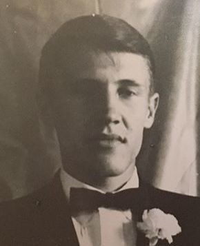
Peter Valentins Danenbergs b. 1942
Peter's father.
Living. As for every living relative on this site, the birth date is given by year only, and no current address is shown.
Also recorded as Peter Valentin Danenberg.
Peter Valentins Danenbergs was born in 1942 in Rīga, Vidzeme, Latvia2,3,4,5, the son of Arvīds Fricis Danenbergs and Elvīra Antonija Sirlaka3,82,83,84,85,86. He married Kathleen Diane Hall on 23 Apr 1966 in Los Angeles, California, United States87,88,89. He arrived at Boston, Massachusetts, United States on 7 Jul 194957.
Peter Danenberg has been on the Biochemistry-faculty at USC for thirty years; from his faculty-bio:We have developed methods for quantitating gene expression by PCR and for rapid mutation detection by RNA conformational analysis. The latter technique is being used to investigate the role of mutations in acquired drug resistance. By using quantitative PCR, we have shown substantial variation among tumors in the degree of expression of genes of drug-targeted enzymes such as thymidylate synthase. Studies are under way to identify factors that alter the normal expression of these genes in cancer cells.He also enjoys basketball, science fiction, Latvian history and the creationism-evolution pseudo-debate.
Family
- Parents
- Arvīds Fricis Danenbergs 1913–1996 and Elvīra Antonija Sirlaka 1912–2011 documented
- Wife
- Kathleen Diane Hall b. 1947 · married on 23 Apr 1966 in Los Angeles, California, United States87,88,89
- Children
- Liga Irene Danenberg b. 1966 documented
- Peter Charles Danenberg Jr. b. 1978 documented
Life events
| Event | Date | Place and details |
|---|---|---|
| Born | 1942 | Rīga, Vidzeme, Latvia Preferred version: Ours (1942, Rīga). Raimonds's MyHeritage tree (2026) gives 1943, the 'about 1943' of a 1966 marriage index.2,3,4,5 |
| Work | bet 17 Sep 1942 and 1980 | Rīga, Vidzeme, Latvia Biographical entry in Latvju enciklopēdija 1962–1982, Vol. 1 (Rockville, MD: Amerikas latviešu apvienības Latviešu institūts, ed. Edgars Andersons, 1983, p. 302 / viewer p. 322) for biochemist Pēteris Valentīns Danenbergs: (1) Birth & parentage: born 1942 in Riga ('dz. 1942…38 |
| Born | 1943 | According to an online family tree6 |
| Lived | bet 1944 and Jul 1945 | Regensburg, Bavaria, Germany8 |
| Lived | bet Aug 1945 and 21 Jun 1949 | Haunstetten DP camp, Augsburg, Bavaria, Germany9 |
| Arrived | 7 Jul 1949 | Boston, Massachusetts, United States57 |
| Lived | 13 Jul 1949 | Liberty Township, Mercer County, Ohio, United States10,11 |
| Lived | bet 1951 and 1960 | Tiffin, Ohio, United States12 |
| Education | bet 1954 and 1955 | Tiffin, Ohio, United States Attended Seventh Grade (Room 105, homeroom teacher Mr. Butdorf) in the junior high division of Columbian High School in Tiffin, Seneca County, Ohio during the 1954–1955 school year (at age 12), five years after the Danenbergs family arrived in Tiffin as displaced persons sponsored by Rev. Wayne O.…18 |
| Education | bet 1955 and 1956 | Bascom, Seneca County, Ohio, United States IN THE EIGHTH GRADE AT HOPEWELL-LOUDON SCHOOL, BASCOM, SENECA COUNTY, OHIO, in the school year 1955–56, in Mrs Patricia Hoffert's class. This is the first dated evidence of where the family lived in the Ohio years. Until now the only fixed point between the Boston landing of 7 July 1949 and his…19 |
| Education | bet 1955 and 1956 | Bascom, Seneca County, Ohio, United States Entered Hopewell-Loudon School in Bascom, Seneca County, Ohio in Eighth Grade (1955–1956, teacher Mrs. Patricia Hoffert), pictured standing eighth from left in the top row on page 24 of the 1956 Hopewell-Loudon yearbook as 'Peter Danenbergs' ('Top Row: David Creeger, Doyle Goshe, Jerry Geller,…20 |
| Education | bet 1956 and 1957 | Bascom, Seneca County, Ohio, United States Ninth-grade student at Hopewell-Loudon High School in Bascom, Seneca County, Ohio in the 1956–1957 school year (pictured in the 1957 Scarlet and Grey yearbook).21 |
| Education | bet 1956 and 1960 | Bascom, Seneca County, Ohio, United States Attended Hopewell-Loudon High School in Bascom, Seneca County, Ohio (just east of Fostoria) for all four years of high school (1956–1960), pictured in the 1957, 1958, 1959, and 1960 school yearbooks with progressive Americanization of his surname across the four volumes: (1) Freshman year…22 |
| Education | bet 1958 and 1960 | Bascom, Seneca County, Ohio, United States Member of the National Honor Society at Hopewell-Loudon High School during his junior (1958–1959) and senior (1959–1960) years and cast member in the Senior Class Play in 1959–1960: (1) Pictured standing at far left of the back row of the National Honor Society in the 1959 yearbook (p. 63: 'BACK…23 |
| Education | bet 1962 and 1963 | Cleveland, Ohio, United States Competed on the Case Institute of Technology varsity Fencing team (coached by Herb James) during his junior year (1962–1963), when the team went 7–6 with victories over Ohio State (15–12), Notre Dame (21–6), Western Reserve (17–10 and 20–7), Fenn (14–13 and 14–13), and Oberlin (12–6). Pictured…24 |
| Education | 1964 | Cleveland, Ohio, United States B.S. in chemistry, Case Institute of Technology, Cleveland, Ohio, 1964. (Case Institute of Technology federated with Western Reserve University in 1967 to form Case Western Reserve University, which is why Peter remembers 'Case Western'.) Both independent sources agree on the school, subject and…25 |
| Education | 1964 | Cleveland, Ohio, United States Pictured as a graduating senior and as a member of Gamma Chapter of Alpha Chi Sigma (the professional chemistry fraternity) in The Differential 1964, the Case Institute of Technology yearbook (pp. 55, 95, 273). His senior portrait appears on page 55 as 'P. V. Dannenberg' (center column, top of the…26 |
| Education | 1964 | Cleveland, Ohio, United States Portrait with caption among the graduates on page 3 of Laiks, 15 July 1964: Pēteris Danenbergs has taken a B.S. degree in chemistry at Case Institute of Technology, will continue at the University of Southern California for a master's degree, and is a member of the fraternity Talavija and of Alpha…27 |
| Education | 1964 | Cleveland, Ohio, United States In the Universitas (Latvian student periodical) article 'L! K! A!' (Latvian Student Corporations), section 'STUDIJU UN DARBA GAITAS', the paragraph on the fraternity Talavija reads, as read by eye on the whole page: 'Talavijā 1962/63/64. g. uzņemtie studenti: Jānis Priedite [no macron visible],…28 |
| Work | bet 1964 and 1966 | Los Angeles, California, United States Assistant (teaching/research assistant) at the University of Southern California, 1964–66, while taking the M.S.39 |
| Education | 9 Jun 1964 | Cleveland, Ohio, United States Graduated from Case Institute of Technology with the degree of Bachelor of Science in Chemistry at the 88th Graduation Convocation held at 2:30 p.m. on Tuesday, 9 June 1964 at Severance Hall in Cleveland, Ohio (President T. Keith Glennan presiding; graduation address by Western Reserve University…29 |
| Work | bet 1966 and 1970 | Santa Barbara, California, United States Research assistant, University of California, Santa Barbara, 1966–70 (the doctoral years, in Daniel V. Santi's orbit).40 |
| Married | 23 Apr 1966 | with Kathleen Diane Hall Los Angeles, California, United States87,88,89 |
| Education | 1967 | Los Angeles, California, United States M.S. in organic chemistry, University of Southern California, 1967. NOTE A CORRECTION: the existing note in research/press-web/findings.yaml reads this as UCLA. The Latvian reads 'D. Kalifornijas U Losandželosā' = Dienvidkalifornijas Universitāte (University of SOUTHERN California) in Los Angeles;…30 |
| Education | bet 1967 and 14 May 1971 | Santa Barbara, California, United States Served as a National Institutes of Health Predoctoral Fellow in the Department of Chemistry at the University of California, Santa Barbara (UCSB), working under Professor Daniel V. Santi on Escherichia coli phenylalanyl-tRNA synthetase (supported by Public Health Service Research Grant No.…31 |
| Education | 1967 | Los Angeles, California, United States Earned his Master of Science (M.S.) degree in Chemistry (organic chemistry) at the University of Southern California in 1967 with the thesis 'Studies toward the synthesis of yohimbine by means of a variation on the Mannich reaction', under committee chair Professor Bryan W. Roberts and committee…32 |
| Education | 1967 | Los Angeles, California, United States Portrait with caption among the graduates on page 3 of Laiks, 23 August 1967: Pēteris Danenbergs has obtained a master's degree in chemistry at the University of Southern California and is continuing for a doctorate at "St. Barbaras koledža" (the page's spelling; Santa Barbara, i.e. University of…33 |
| Education | 1970 | Santa Barbara, California, United States Ph.D. in bioorganic chemistry, University of California, Santa Barbara, 1970. CONFLICT: USC's own 2011 faculty page says 'PhD 1970 Chemistry - University of Southern California'. I believe the encyclopaedia (and Peter's own recollection of Santa Barbara) over the USC page, because his three…34 |
| Education | 1970 | Santa Barbara, California, United States Earned his Doctor of Philosophy (Ph.D.) degree in Chemistry at the University of California, Santa Barbara in 1970 with the dissertation 'The catalytic and binding properties of Phenylalanyl-tRNA synthetase from Escherichia Coli' (xix, 261 leaves, bound; UCSB Library Alma MMS 990017319690203776,…35 |
| Work | bet 1970 and 1974 | Madison, Wisconsin, United States Researcher at the McArdle Laboratory for Cancer Research, University of Wisconsin–Madison, 1970–74, in Charles Heidelberger's laboratory (Heidelberger discovered 5-fluorouracil). USC's faculty page calls it a postdoctoral research fellowship 1970–1973. His papers of 1972–76 are co-authored with…41 |
| Education | 26 Sep 1970 | Santa Barbara, California, United States News item in the column "Latvieši aizjūrā" on page 7 of Latvija, 26 September 1970 (masthead "Sestdien, 1970. g. 26. septembrī", page number 7): Pēteris Danenbergs has received a doctorate in bioorganic chemistry at the University of California, Santa Barbara, after successfully defending his…36 |
| Note | bet 1971 and 2024 | Publication record, three independent counts: ResearchGate 356 publications and 20,055 citations (Oct 2026); research.com 191 publications 1971–2024, h-index 59, 13,130 citations in Biology and Biochemistry (Aug 2026), peak output 13 papers in 2002; PubMed 196 indexed papers 1971–2022. Semantic…58 |
| Education | Apr 1971 | California, United States In the list "Tālavija. Studijas beiguši:" in the fraternity news of Universitas (the page prints the name with "Ph. D. (ķīmijā), Univ. of Califor-" at the foot of viewer p. 68, the word continuing "nia" at the top of p. 69). Date (No. 27, April 1971) is from Periodika's record via the sweep; the…37 |
| Note | Apr 1971 | Milwaukee, Milwaukee County, Wisconsin, United States Laiks sports column (article headline per the library: 'Priekšsacīkstes sākušās'), read by eye on the whole page: in a report on a game of Milwaukee Auseklis (the head of the article was not read; the preceding text names Indianapole VV and its scorers K. Šteinmanis /24/, Kalepu /21/, Fricsonu…59 |
| Note | Apr 1971 | Milwaukee, Milwaukee County, Wisconsin, United States Read by eye on the whole page, right-hand column, in a report on the Middle States preliminary round at Milwaukee (the heading was not read; the library has 'PRIEKŠSPĒLES MILVOKOS'): after the volleyball games 'notika arī basketbola priekšsacīkšu spēle, kurā sastapās Milvoku Auseklis ar Čikagas…60 |
| Note | bet 3 Apr 1971 and 14 Apr 1971 | Milwaukee, Milwaukee County, Wisconsin, United States Two Latvian-American basketball game reports in the sports section of Laiks (New York) in April 1971 record 'P. Danenbergs' playing alongside his younger brother 'K. Danenbergs' (Kalvis Danenbergs) for the Milwaukee Latvian sports club 'Auseklis' during the 1970–1971 academic year, when Peter was…61 |
| Work | bet 1974 and 1976 | Madison, Wisconsin, United States Scientist at the University of Wisconsin Clinical Cancer Center, 1974–76.42 |
| Note | bet 1974 and 1979 | Early bibliography as summarised in 1983: 20 scientific papers and 9 abstracts to 1980, alone and with others; a chapter in 'Antimetabolites in Biochemistry, Biology and Medicine' (1979); and, with Charles Heidelberger, a method for enzyme isolation in the handbook Methods in Enzymology (1974). He…62 |
| Work | 1976 | Los Angeles, California, United States Joined the Department of Biochemistry, University of Southern California School of Medicine, in 1976; associate professor (docents) there by 1983. He has been on the USC faculty ever since — fifty years in 2026.43 |
| Lived | 1977 | Glendale, California, United States13 |
| Note | bet 1977 and 1978 | Los Angeles, California, United States He and Kathleen published together, as husband and wife, from the first years at USC — twenty years before Response Genetics. Two early joint papers: Danenberg PV, Danenberg KD, "Inhibition of hexokinase by multisubstrate analogs", Biochimica et Biophysica Acta 1977 (cited 21 times); and Danenberg…63 |
| Lived | bet 1978 and 1984 | La Cañada Flintridge, California, United States14,15 |
| Note | bet 1979 and 1984 | Los Angeles, California, United States Associated with grant/award number FRA-197 across 19 peer-reviewed publications indexed in Google Scholar for the query '"FRA-197" "Danenberg"' between 1979 and 1984, including Lockshin & Danenberg (J. Biol. Chem., 1979), Lockshin & Danenberg (Biochemistry, 1980), Danenberg, Heidelberger & Mulkins…64 |
| Lived | 1980 | Glendale, California, United States16 |
| Work | bet 1983 and 2013 | Los Angeles, California, United States Served as a permanent member of the international Charles Heidelberger Group and the Charles Heidelberger Award Committee alongside fellow Heidelberger alumni and collaborators John S. Bertram (Honolulu), Eliezer Huberman (Argonne), Peter A. Jones (Los Angeles), Karl-Heinrich Link (Ulm), Enrico…44 |
| Work | 1984 | Los Angeles, California, United States Co-authored with his former doctoral mentor Daniel V. Santi the book chapter 'Mechanisms of interaction of thymidylate synthase with 5-fluorodeoxyuridylate' in Folates and Pterins, edited by R. L. Blakley and S. J. Benkovic (New York: Wiley, 1984) (retrieved 2026-11-15).45 |
| Work | bet 1 May 1985 and 31 Dec 2008 | Los Angeles, California, United States Documented across 41 project-year records in NIH RePORTER (1985–2008) on National Cancer Institute (NCI) collaborative and contact-PI research grants at the University of Southern California: (1) R01CA039629 ('BIOCHEMISTRY AND PATHOLOGY OF 5-FU/FOLATE THERAPY', 1985-05-01 to 1996-06-30, contact PI…46 |
| Lived | 1 Jan 1988 | Pasadena, California, United States17 |
| Work | bet 1989 and 2022 | Los Angeles, California, United States Professor, Department of Biochemistry and Molecular Biology (renamed Biochemistry and Molecular Medicine c. 2016), Keck School of Medicine of USC, and member of the USC/Norris Comprehensive Cancer Center. His published affiliations, which PubMed records from 1989 on, trace the department's…47 |
| Note | bet 1992 and 2015 | United States Profiled in fourteen editions of American Men & Women of Science: A Biographical Directory of Today's Leaders in Physical, Biological, and Related Sciences between 1992 and 2015: the 18th (1992–1993), 19th (1994), 20th (1998), 21st (2003), 22nd (2005), 23rd (2006), 25th (2008), 27th (2010), 28th…65 |
| Note | bet 7 Dec 1992 and 10 Jun 1993 | Los Angeles, California, United States Named co-inventor (with Olaf M. Koch, Matthias Volkenandt, Kathleen Danenberg, Joseph Bertino, and Tetsuro Horikoshi; assignees University of Southern California and Memorial Sloan-Kettering Cancer Center) on PCT International Patent Application WO1993011266A1 ('Method for the detection of…66 |
| Note | bet 1994 and 2003 | Los Angeles, California, United States NIH principal investigator at the University of Southern California on two R01 grants, seven funded years in NIH RePORTER: R01 CA060859, 'Response determinants in advanced breast cancer', 1 Jul 1994 – 30 Jun 1997 (FY1994 $243,424; FY1995 $259,171; FY1996 $268,383); and R01 CA071716, 'Molecular…67 |
| Work | bet 1 Jul 1994 and 31 Jul 2003 | Los Angeles, California, United States Served as Contact Principal Investigator (profile_id 1882051, Department of Biochemistry) on two National Cancer Institute (NCI / NIH) R01 research grants at the University of Southern California totaling $2,408,290 in direct and indirect federal funding across 7 project-years in NIH RePORTER: (1)…48 |
| Note | bet 6 Jun 1997 and 15 Aug 2001 | Los Angeles, California, United States Hosted a personal homepage on his University of Southern California Health Sciences account at http://www-hsc.usc.edu/~pdanenbe/ (archived by the Internet Archive Wayback Machine on 6 June 1997 and 15 August 2001). Titled 'Home Page for Dr. Peter V., PhD Danenberg' with heading 'Peter Danenberg's…68 |
| Work | bet 1998 and 2003 | Los Angeles, California, United States Directed the Danenberg molecular pharmacology and gene-expression laboratory at the University of Southern California, described firsthand in Dr. Reginald Vincent Norrie Lord's October 2003 Doctor of Medicine (in Surgery) thesis at the University of New South Wales ('Studies on Barrett's…49 |
| Work | bet 1999 and 2012 | Los Angeles, California, United States Served as a scientific advisory consultant, co-founder of the RGI-1 technology, and principal stockholder of Response Genetics, Inc. (NASDAQ: RGDX; incorporated in Delaware in September 1999 as Bio Type, Inc. and renamed Response Genetics, Inc. in August 2000). In Response Genetics' IPO prospectus…50 |
| Note | bet 20 Dec 1999 and 16 Aug 2011 | Los Angeles, California, United States Named co-inventor (with Kathleen Danenberg and Steven Swenson; assignee University of Southern California; supported by his NCI grant R01 CA071716) on the entire family of seven issued United States patents and thirteen granted foreign patents covering the RGI-1 formalin-fixed paraffin-embedded…69 |
| Work | bet 2000 and 2008 | Los Angeles, California, United States Credited by the Association of University Technology Managers (AUTM) Better World Project story 'Extraction Technology Allows Researchers to Identify Genetic Information from Preserved Tissue' (originally published in 2008) alongside University of Southern California researchers Kathleen…51 |
| Work | bet 2003 and 2018 | Los Angeles, California, United States Chaired or served on doctoral dissertation and master's thesis committees in the Department of Biochemistry and Molecular Biology, Graduate School, and Keck School of Medicine at the University of Southern California, documented in the USC Digital Library theses collection: Committee Chair for Ji…52 |
| Note | 6 May 2008 | Named as husband and wife (joint owners of Response Genetics shares)70 |
| Note | bet 28 Dec 2009 and 13 Jul 2019 | Pasadena, California, United States Eight adult photographs of Peter Valentins Danenbergs (I0011) from his Facebook profile (@peter.danenberg.3, 2009–2019) preserved in raw/ and img/: (1) Photograph (2009-12-28, fbid=1310534086087) showing Peter Valentins Danenbergs (right, in a teal polo shirt and glasses) standing indoors in front…71 |
| Note | 2011 | Los Angeles, California, United States Research description in his own words on the USC faculty page: 'The work in this laboratory is directed at understanding the mechanisms by which cytotoxic anti-cancer drugs interact with their intracellular targets and the molecular factors and events determining response of tumors to drugs… By…72 |
| Note | 5 Apr 2011 | Los Angeles, California, United States Named inventor, with Kathleen Danenberg and Steven Swenson, on US patent 7,919,280 B2, 'Method for isolation of DNA, RNA and proteins from formalin-fixed paraffin-embedded tissue specimens', assigned to the University of Southern California; filed 27 Jul 2007, granted 5 Apr 2011. This is the…73 |
| Note | 26 Aug 2011 | Los Angeles, California, United States Published university contact details, as of the 2011 capture of his faculty entry: email [email omitted]; telephone [phone omitted]; fax [phone omitted]; office NOR 5318 (Norris Comprehensive Cancer Center); mail code 9176 HSC; personal page http://www-hsc.usc.edu/~pdanenbe/. The email still…74 |
| Work | bet 2015 and 2022 | Los Angeles, California, United States Still on the departmental faculty list through the department's renaming. USC's catalogue for 2020–21 (catoid 14) lists the Department of **Biochemistry and Molecular Medicine** with "Professors: Peter V. Danenberg; Vijay Kalra; …" beneath its chair and vice-chairs; the 2022–23 catalogue (catoid…53 |
| Note | 28 Sep 2015 | Los Angeles, California, United States Uploaded his ResearchGate profile portrait (https://i1.rgstatic.net/ii/profile.image/278820537028623-1443487405017_Q512/Peter-Danenberg-2.jpg; epoch timestamp 1443487405017 = 28 September 2015 at 17:43 PDT / 29 September 2015 at 00:43 UTC), a photograph of himself at home wearing a white 'USC…75 |
| Note | 31 May 2018 | Los Angeles, California, United States Still publishing in his late seventies: a 2018 ASCO abstract, "Gene expression differences in cell-free RNA between…", carries "Peter V. Danenberg — USC Keck School of Medicine Norris Comprehensive Cancer Center, Los Angeles, CA" (J Clin Oncol 36, no. 15_suppl, e17077). His last PubMed-indexed…76 |
| Work | bet 2022 and 2026 | Los Angeles, California, United States Still listed among the Professors with primary appointments in the Department of Biochemistry and Molecular Medicine in the USC Catalogue for 2022–23 and again in the current 2026–27 catalogue (also under the Department of Cancer Biology). Department address 1975 Zonal Avenue, KAM 400, Los…54 |
| Note | Jan 2025 | Altadena, California, United States The family home at [address omitted], Altadena (a single-storey house built in 1964) was destroyed in the Eaton Fire of January 2025: CAL FIRE's damage inspection rates it 'Destroyed (>50%)' (incident CALAC 009087).77 |
| Note | bet 7 Jan 2025 and 8 Jan 2025 | Altadena, California, United States HE AND KATHLEEN LOST THEIR HOUSE IN THE EATON FIRE of 7–8 January 2025. Their daughter Līga set up a GoFundMe, "Help Danenberg's Rebuild after Lost Everything in Eaton Fire", and posted it to her school alumni group: "Hello friends, I created a GoFundMe to help my parents as they begin to rebuild…78 |
| Work | 2026 | Los Angeles, California, United States 'Emeritus Professor of Biochemistry at University of Southern California' on his own ResearchGate profile, which ResearchGate marks Verified ('Peter verified their affiliation via an institutional email'). The profile gives 356 publications, 20,055 citations and 16,323 reads as at 29 Oct 2026,…55 |
| Note | 2026 | Identifiers found for him: ResearchGate profile Peter-Danenberg-2 (rg:id AC:5516323), with a profile photograph at https://i1.rgstatic.net/ii/profile.image/278820537028623-1443487405017_Q512/Peter-Danenberg-2.jpg; research.com profile research.com/u/peter-v-danenberg; Semantic Scholar author…79 |
| Origin | Latvia According to the family's 2015 tree7 | |
| Work | Hearsay about Elvīra’s son (Peter’s father). LIVING. The surname Danenbergs does not occur in the memoir.56 | |
| Note | Australia His students and collaborators record what he was like to work with. Reginald V. N. Lord's doctoral thesis at the University of New South Wales thanks "Peter V. Danenberg, Professor of Biochemistry and Molecular Biology at USC", under whom "I was principally responsible for initiating the study of…80 | |
| Note | According to an online family tree81 |

Possible records (not confirmed)
Records that may concern him, but don't settle it: an initial and a surname only, a family recollection, or a reading that needs a second look. Each links to the record.
- Other 1983~ Los Angeles, California, USA: LEAD, not yet a fact. A footnote on his 1983 Journal of Biological Chemistry paper (Bapat AR, Zarow C, Danenberg PV, "Human leukemic cells resistant to 5-fluoro-2'-deoxyuridine contain a thymidylate synthetase with lower affinity for nucleotides", JBC 258:4130–4136, 10 April 1983) carries a dagger on his name reading "Recipient of Faculty Research Award FRA-197 from the American Cancer Society".…90 A search-engine snippet of a footnote that could not be archived. The grant number and the acknowledgement of Kathleen are in the same snippet and are consistent with everything else, but the award itself is unverified.
- Note 1959-09-12/1960-08-13 Grand Rapids area, Kent County, Michigan, USA: Two youth camp reports in Laiks (New York) from the Grand Rapids and vicinity Latvian Ev.-Lutheran congregation's summer camp 'Daugava' in Michigan name a teenage 'P. Danenbergs' in 1959 and 1960: (1) Laiks, 1959-09-12, p. 5 ('Arī Mičigenā aug jauni latviešu vieglatlēti', signed A. P.): in the track-and-field competition at the camp 'Daugava', in the boys' 14–17 age group 60-meter dash, 'P.…91 Only first initial and surname ('P. Danenbergs') are printed, without town or parentage, but Peter Valentins Danenbergs (born 1942) was 16–17 in summer 1959 (matching the 14–17 age bracket) and 17 in August 1960, and his parents regularly attended Latvian events in western Michigan.
- Education 1960/1962 Case Institute of Technology, Cleveland, Cuyahoga County, Ohio, USA: Enrolled as a freshman at Case Institute of Technology in 1960–1961 (listed in the Freshmen Index of The Differential 1961, p. 258, as 'Dannenbergs, P. V.', retaining the Latvian final -s) and as a sophomore in 1961–1962 (listed in the Sophomores Index of The Differential 1962, p. 252, as 'P. V. Dannenberg') (retrieved 2026-11-15).92 Case Institute of Technology 1961 and 1962 yearbook class rolls matching his 1960–1964 enrollment and showing the transition from 'Dannenbergs, P. V.' as a freshman to 'P. V. Dannenberg' as a sophomore.
- Social_account 1942-09-17/2026-11-07 Palo Alto, Santa Clara County, California, USA: Active Facebook profile for Peter Danenberg at https://www.facebook.com/peter.danenberg.3/ (numeric user ID 1312661855; 86 friends, including son Peter Charles Danenberg, sister Liga Schubach, brother-in-law Steven C. Hall, and cousin Yasmine Jaunakais Shoemaker). Self-reported profile fields record: (1) Personal details: Birthday '1942'; Status 'Married since April 23, 1966';…93 First-person Facebook profile of Peter Valentins Danenbergs verified by exact birth date (1942), marriage date (1966-04-23), Hopewell-Loudon / Case / UCSB / USC career, and family connections.
- Other 1960-08 Grand Rapids area, Michigan, USA (Grand Rapids and vicinity Latvian Ev. Lutheran congregation children's summer camp): Laiks, 'Grand Rapidu chronika': the Grand Rapids and vicinity Latvian Ev. Lutheran congregation's children's summer camp held its children's festival on 7 August (1960 by the issue date; the masthead was not read); the camp commandant is stud. theol. I. Gaide. 'Nometnē jau bijusi arī "pašvaldības diena", kad nometni vadīja pašu jauniešu vēlētais priekšnieks P. Danenbergs, bet komandantes amatā…94 Only 'P. Danenbergs' (initial + surname) is printed, no town or relation. Peter (b. 1942) would have been 18 in August 1960 and the family lived in Ohio/Michigan, so a teenage camp leader fits, but so would any young P. Danenbergs. A lead is kept: press-laiks-p-danenbergs-1959-60-youth.
- Other 1959-09 Grand Rapids area, Michigan, USA (Grand Rapids and vicinity Latvian Ev. Lutheran congregation children's camp "Daugava"): Laiks, article 'Arī Mičigenā aug jauni latviešu vieglatlēti' (signed A. P.), read by eye on the whole page: the track-and-field competition at the Grand Rapids and vicinity Latvian Ev. Lutheran congregation's children's camp 'Daugava' 'this year' ('Šogad'); children were in three age groups (to 10, 10–14, 14–17). Boys' 60 m, 14–17 group: '1. P. Ozoliņš 8,0 sek., 2. I. Prīverts 8,1 sek., 3. P.…91 Only 'P. Danenbergs' (initial + surname) is printed, with no town or relation. Peter (b. 1942) would have been 17 in 1959, inside the 14–17 group, and the family lived in Michigan/Ohio; the Grand Rapids camp also appears in pl-081 (1960). That is consistent, not proof. Lead press-laiks-p-danenbergs-1959-60-youth stays open.
Photographs


![Seventh Grade — Room 105: Top Row: Linda Adams, Carol Diemer, Janet Sue Biller, Nancy Clouse, Milo Bishop, Dorothy Burke, Sandra Beard, Peter Danenberg. 4th Row: Geraldine Brown, Judy Ditslear, Margret Doyle, Sharon Crabtree, Jean Betts, Duane Cook, Margie Baker. 3rd Row: a DNA match, Lindy Brant, Bob Biddle, Virgil Downs, Cleo Barto, Tom Biddle, Tom Barrie, Georgia Drake. 2nd Row: Mr. Butdorf, Roberta Bridinger, Diane Byrne, Eddie Beitel, Ronald Adelsperger, Judith Deahl, Charlene Beismer, Mary Dildine. 1st Row: James Barger, Lynn Bish, Darla Bare, Ethelyn Boles, Carol Bear, Gerald Anderson. (Columbian High School 1955 yearbook, Tiffin, Ohio, p. 78)](../../img/photos/1955-tiffin-columbian-hs-grade7-room105.jpg)
![Eighth Grade — Top Row: David Creeger, Doyle Goshe, Jerry Geller, John Park, Milo Bishop, David Hohman, Jerry King, Peter Danenbergs, Doris Depinet, Nancy Bushong. Third Row: Joanne Vogel, Betty Kline, Velma Droll, Gloria Lowery, Sandra Smith, Larry Fruth, John Hoover, Penny Gelnys, Shirley Wertz. Second Row: Karen Coppus, Bill Schlenker, Dennis Hohman, Roger Reinhart, Larry Reinhart, Paul Clouse, Roger Myers, Jerry Kuhn, Nadine Sperow, Barbara Werling. Bottom Row: Donald Yoder, Joe Kobilis, Roger Zepernick, John Hohman, Tom Scherger, Roger Cramer, Chester Snyder, Beverly Creeger, Betty Doudore, Ann King. Teacher: Mrs. Patricia Hoffert. (Hopewell-Loudon High School 1956 yearbook, Bascom, Ohio, p. 24)](../../img/photos/1956-hopewell-loudon-hs-grade8-p28.jpg)
![Graduates Of 1960 — BOTTOM ROW: David Creeger, Donald Yoder, David Hohman, Roger Zepernick, Dennis Hohman, Larry Fruth, Jerry Geller, John Park, Doyle Goshe, Peter Danenbergs, Gerald King, Milo Bishop, Chester Snyder. SECOND ROW: Mrs. Lowery, John Hoover, Roger Myers, Paul Clouse, Roger Cramer, Bill Schlenker, Roger Reinhart, Larry Reinhart, Thomas Scherger, Shirley Wertz, Nadine Sperow, Barbara Werling, Joanne Vogel, Ann King. THIRD ROW: Jerry Kuhn, Joe Kobilis, John Hohman, Betty Kline, Velma Droll, Karen Coppus, Doris Deplant, Nancy Bushong, Sandra Smith, Beverly Creeger, Penny Gelnys, Gloria Lowery, Betty Doudore, Ruth Ruse. (Hopewell-Loudon High School 1957 yearbook, Bascom, Ohio, p. 28)](../../img/photos/1957-hopewell-loudon-hs-graduates1960-p32.jpg)
![SOPHOMORES — Row 1: Milo Bishop, Sandra Brickner, Nancy Bushong, Paul Clouse, Roger Cramer, Beverly Creeger, David Creeger. Row 2: Karen Coppus, Peter Danenburgs, Betty Doudore, Velma Droll, Larry Fruth, Penny Gelnys, Doyle Goshe, John Hohman, John Hoover. Row 3: Dennis Hohman, Joe Kobilis, Ann King, Gerald King, Betty Kline, Jerry Kuhn, Gloria Lowery, Roger Myers. Row 4: John Park, Larry Reinhart, Roger Reinhart, Ruth Ruse, Bill Schlenker, Tom Scherger, Sandra Smith, Chester Snyder, Nadine Sperow. Row 5: Joanne Vogel, Barbara Werling, Shirley Wertz, Donald Yoder, Roger Zepernick. Advisor, Mr. Drury. (Hopewell-Loudon High School 1958 yearbook, Bascom, Ohio, p. 32)](../../img/photos/1958-hopewell-loudon-hs-sophomores-p39.jpg)
![GRADE ELEVEN — FIRST ROW: Milo Bishop, Sandra Brickner, Nancy Bushong, Paul Clouse, Roger Cramer, Beverly Creeger. SECOND ROW: Karen Coppus, David Creeger, Peter Dannenbergs, Betty Doudore, Velma Droll, Larry Fruth, Penny Gelnys, Doyle Goshe. THIRD ROW: Dennis Hohman, John Hohman, John Hoover, Gerald King, Betty Kline, Joe Kobilis, Jerry Kuhn, Donnell Lee. FOURTH ROW: Gloria Lowery, Roger Myers, John Park, Larry Reinhart, Roger Reinhart, Ruth Ruse, Bill Schlenker, Tom Scherger. FIFTH ROW: Sandra Smith, Chester Snyder, Nadine Sperow, Joanne Vogel, Peter Wagner, Barbara Werling, Shirley Wertz, Donald Yoder, Roger Zepernick. (Hopewell-Loudon High School 1959 yearbook, Bascom, Ohio, p. 35)](../../img/photos/1959-hopewell-loudon-hs-grade11-p43.jpg)


Records


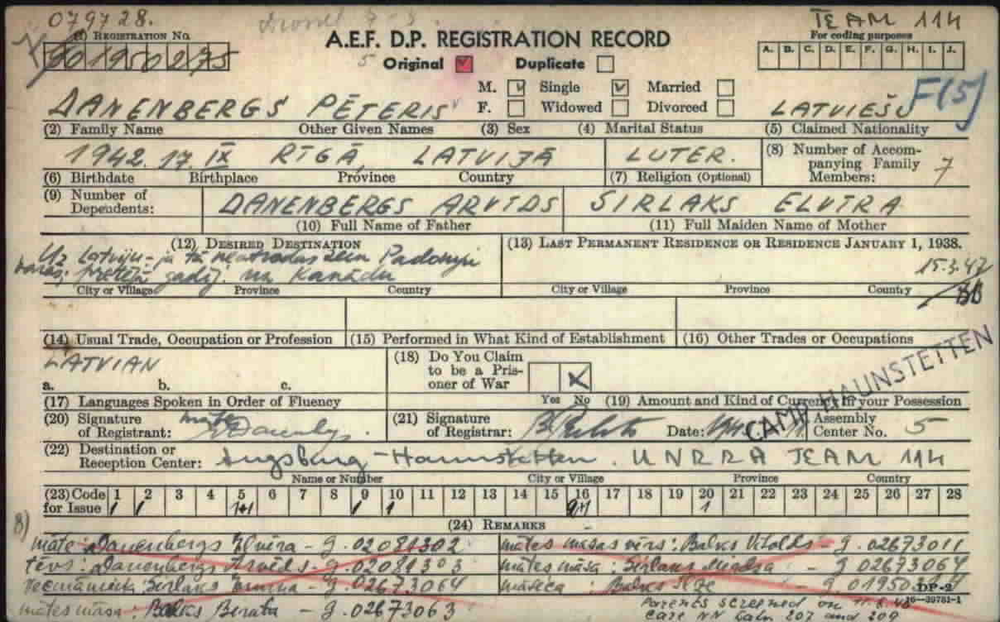


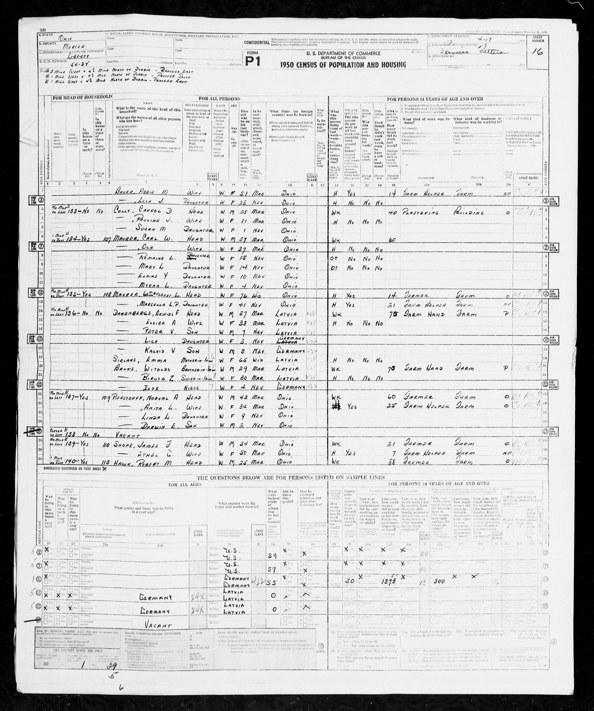

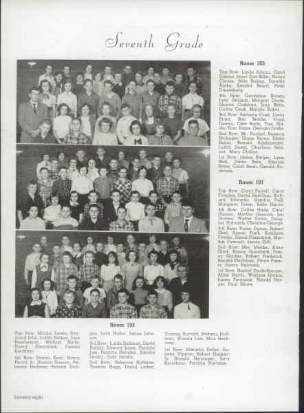

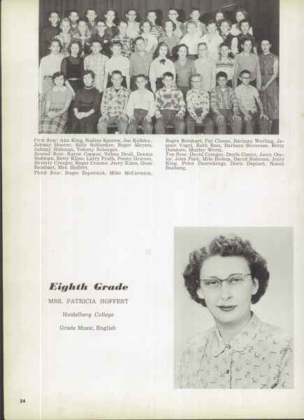

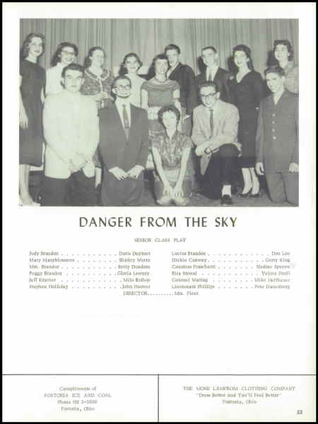
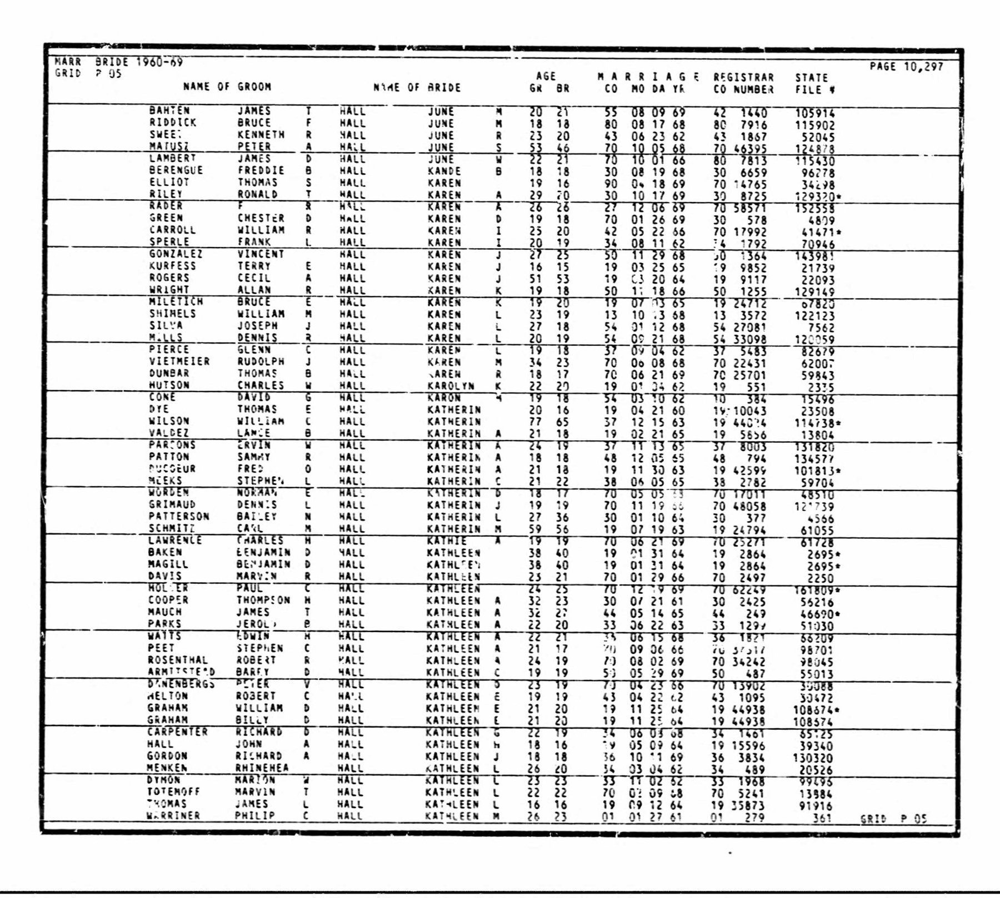

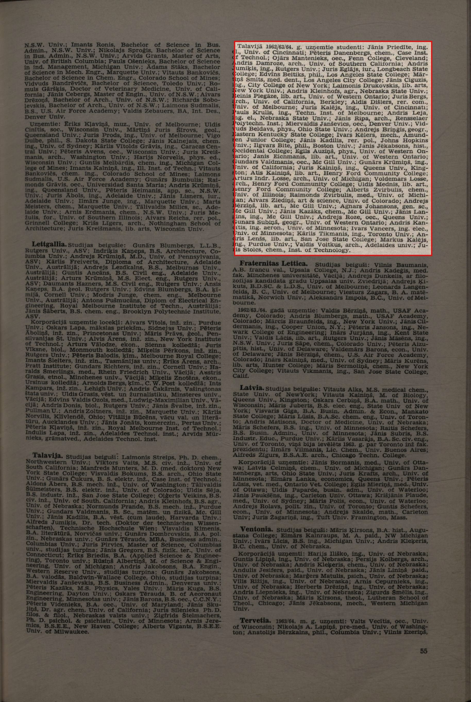


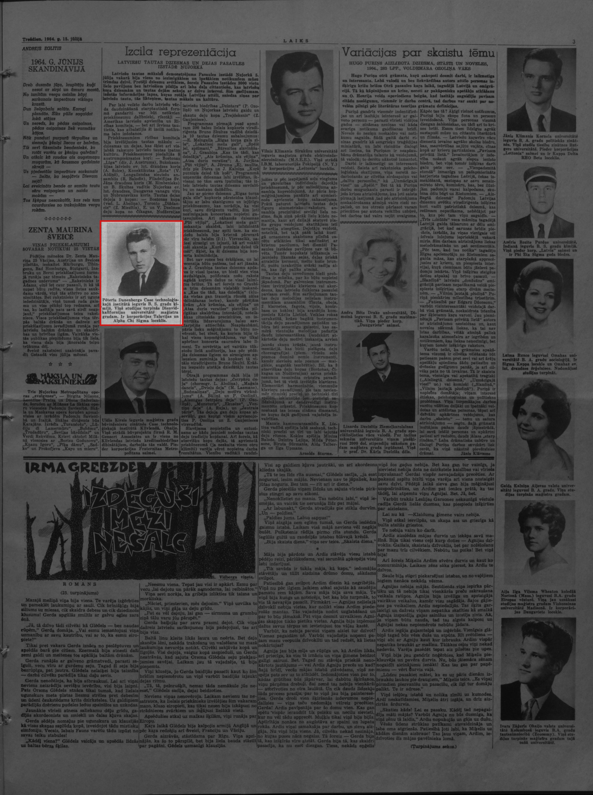
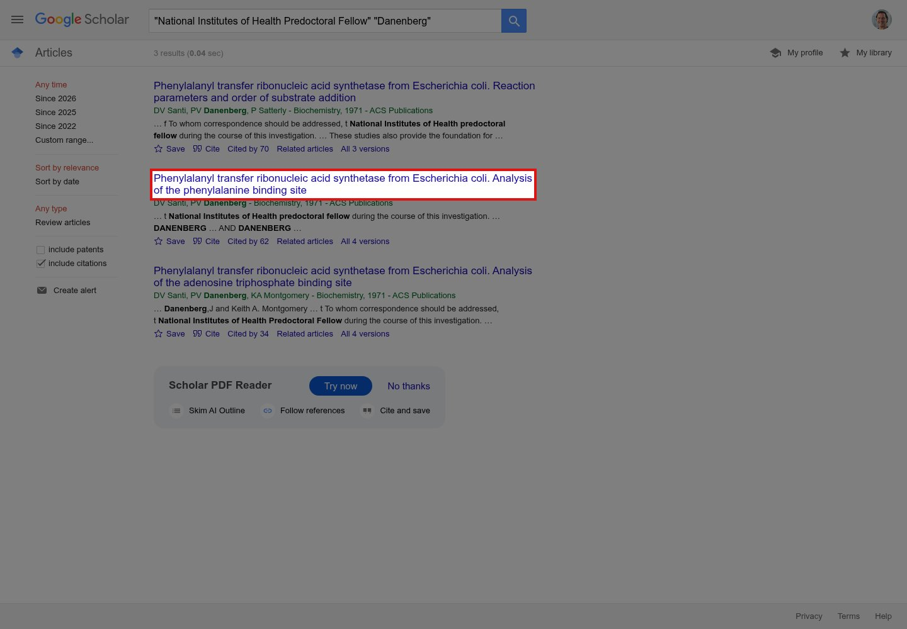

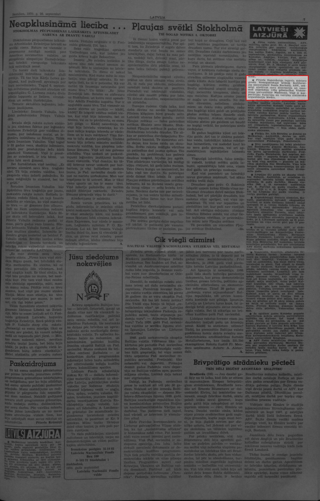
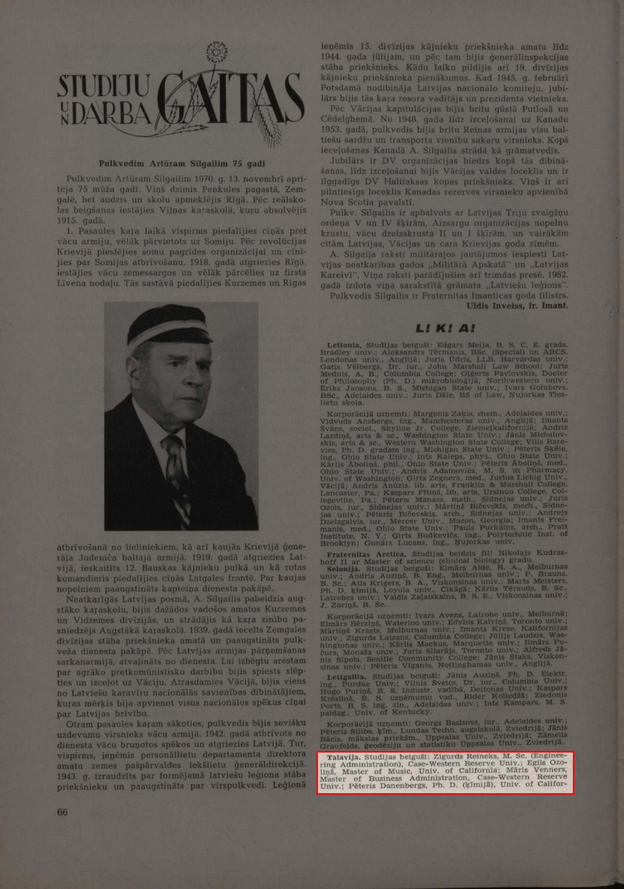


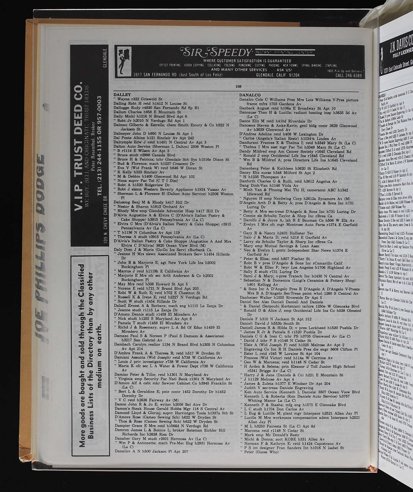


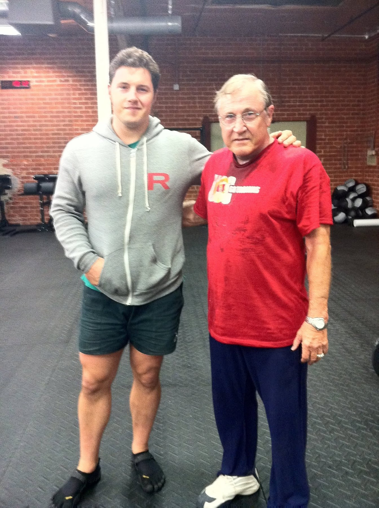


Sources
- MyHeritage family tree 'Dzimta' of Peter's third cousin (his family site), member GEDCOM export of 26 Oct 2026, I500161 (person-6500161), GEDCOM lines 10064–10138.
NAME Peter Valentin /Danenberg/
His record match: U.S. Yearbooks, 1890-1979, https://www.myheritage.lv/research/collection-10568/us-yearbooks-1890-1979?itemId=156367140&action=showRecord: 'Hopewell-Loudon High School | School location: Bascom, Seneca County, Ohio, United States | Gadagrāmatas gads: 1956 | Lapa: 28& | lt;br />Teksts: "...David Creeger, Doyle Comer, Jerry Om- lor, John Park, Milo Bishop, David Hohman, Jerry King, Peter Danenbergs, Doris Depinet, Nancy Bushong. Eighth Grade MRS. PATRICIA HOFFE | RT Heidelberg College Grade Music..." | Related Yearbooks: These are additional yearbooks …'. His record match: U.S. Yearbooks, 1890-1979, https://www.myheritage.lv/research/collection-10568/us-yearbooks-1890-1979?itemId=156368158&action=showRecord: 'Hopewell-Loudon High School | School location: Bascom, Seneca County, Ohio, United States | Gadagrāmatas gads: 1957 | Lapa: 32& | lt;br />Teksts: "...David Hohman, Roger Zepernick, Dennis Hdiman, Larry Fruth, Gerry Qmlor, John Park, Doyle Comer, Peter Danenbergs, Gerald King, MUo Bishop, Chester Snyder. SECOND ROW: Mrs. L | owery, John Hoover, Roger Myers..." | Related Yearbooks: These are additional yearbooks from …'.
- AEF DP Registration Record, Danenbergs Pēteris, Reg. No. 901950275, DE ITS 3.1.1.1, folder DP0730, DocID 66841198.
DANENBERGS PĒTERIS | RĪGĀ, LATVIJĀ | DANENBERGS ARVĪDS | SIRLAKS ELVĪRA
LIVING. The DP card and the 1947 Regensburg list disagree on the birthplace.
- Declaration of Intention No. 134, Arvids Danenbergs, Mercer County Common Pleas, Celina, Ohio, 14 Aug 1950.
Peteris Danenbergs -- M--1942-Riga, Latvia-Rockford, Ohio
From both parents' declarations. Also in the 1950 census as 'Peter V', age 7. His own Ohio naturalization index entry is QG1L-RCDQ.
- Lēmums Nr. 3959 (13.09.2021.) un Lēmums Nr. 3957 (13.09.2021.), PMLP PSKN Nr. 3959 & Nr. 3957.
Pēteris Valentīns Danenbergs dzimis 1942 Latvijā, vecāki: Arvīds Danenbergs un Elvīra Danenberga, Latvijas pilsoņi, dzimšana reģistrēta 1942.
Translation: Pēteris Valentīns Danenbergs was born on 1942 in Latvia; parents: Arvīds Danenbergs and Elvīra Danenberga, Latvian citizens; birth registered 1942.
Born 1942 in Latvia to Arvīds Danenbergs and Elvīra Danenberga, Latvian citizens; birth registered 1942 (the decisions name no registry office). Latvian citizenship restored in 1993 (his 16 Dec 2019 email to the Embassy).
- Danenbergs, Pēteris Valentīns, Latvju enciklopēdija (1983).
Danenbergs Pēteris Valentīns (dz. 1942. … Rīgā) — bioķīmiķis. (T. — Arvīds D., agr.; m. — Elvīra, dz. Sirlaka, farm.)
Translation: Danenbergs, Pēteris Valentīns (born 1942 … in Rīga), biochemist. (Father: Arvīds D., agronomist; mother: Elvīra, née Sirlaka, pharmacist.)
Entry in the exile encyclopaedia, naming parents 'Arvīds D., agr.' and 'Elvīra, dz. Sirlaka, farm.'. It gives full birth date and education (B.S. chemistry, Case Institute of Technology, Cleveland, 1964; M.S. organic chemistry, UCLA, 1967; …). Middle name Valentīns. Date withheld here: living person.
- MyHeritage family tree 'Dzimta' of Peter's third cousin (his family site), member GEDCOM export of 26 Oct 2026, I500161 (person-6500161), GEDCOM lines 10064–10138.
BIRT · 1943
His record match: Kalifornija, Laulības, 1960 - 1985, https://www.myheritage.lv/research/collection-10202/kalifornija-laul%C4%ABbas-1960-1985?itemId=810201&action=showRecord: 'Peter V Danenbergs un Kathleen D Hall | Laulības: 23. Apr 1966 - Los Angeles, California, USA | Vīrs: Peter V Danenbergs | Dzimšana: Apmēram 1943 | Vecums: 23 | Sieva: Kathleen D Hall | Dzimšana: Apmēram 1947 | Vecums: 19'.
- Peter's tree, danenberg.sql, 2007–2015, personae 11, provenance.
- Kategorie III list of foreigners no longer resident, Landkreis Regensburg, Blatt 1, 29 May 1947, DocID 70184107.
Danenbergs | Peter | 1942 Schwanenberg | m | | — | 12. 1.45
Fled Latvia at age two in autumn 1944 with his parents and grandmother Emma via the Kurzeme coast, Ventspils, and Danzig to two farms in Landkreis Regensburg, Bavaria (listed on the 1947 Landkreis Regensburg foreigner list with sojourn date 12 January 1945), remaining there until summer 1945.
- AEF DP Registration Record, Danenbergs Pēteris, Reg. No. 901950275, DocID 66841198.
DANENBERGS PĒTERIS | 1942 RĪGĀ, LATVIJĀ | Assembly Center No. 5 | CAMP HAUNSTETTEN | Augsburg - Haunstetten. UNRRA TEAM 114
Lived with his parents, grandmother Emma, aunt Biruta, uncle Vitolds, cousin Ilze, and twin siblings Kalvis and Līga (born 1946) in the Latvian DP camp at Haunstetten near Augsburg, attending the camp's Latvian kindergarten until the family departed Haunstetten on 21 June 1949.
- Eight Latvian DP's Will Make Homes In Mercer Co., The Journal-Gazette (Fort Wayne, Indiana), 14 July 1949, p. 13.
The family of six includes Arvids Danenbergs. 36. his wife. Elvira. 37, their three children. Peter. 6, a set of twins. Liga and Kalvis. 2>2, and Mrs Dancnherg’s mother. Mrs. Emma Sirlaks
Translation: The family of six includes Arvids Danenbergs, 36, his wife, Elvira, 37, their three children, Peter, 6, a set of twins, Liga and Kalvis, 2 1/2, and Mrs. Danenbergs's mother, Mrs. Emma Sirlaks.
Residing at age 6 with parents Arvids and Elvira Danenbergs, twin siblings Liga and Kalvis (2 1/2), and maternal grandmother Emma Sirlaks at the tenant house on the D. R. Smalley farm in Liberty Township, Mercer County, Ohio.
- Household of Arwids F Danenbergs, Liberty Township, Mercer, Ohio.
Peter V Danenbergs: Race = White; Census 10 April 1950 @ Liberty Township, Mercer, Ohio, United States; Birth 1943 @ Latvia; Residence 1949; RelationshipToHead=Son; Age=7
After landing in Boston on 7 July 1949, he lived with his parents, twin siblings, and grandmother on the farm of sponsor Robert M. Hawk in Liberty Township, Mercer County, Ohio (Rockford mailing address), starting school and enumerated there as 'Peter V Danenbergs' (age 7) in the 10 April 1950 US Census.
- Tiffin, Seneca County, Ohio residence of the Danenberg family (1951–1960).
1953 Danenbergs Elvira Mrs pharm Mercy Hosp h23 Apple / 1956 Danenbergs Elvira (Arvids) pharmacist Mercy Hosp r RD 2 / 1958 Danenbergs Elvira Mrs pharm Mercy Hosp r RD 2 / 1959 Danenbergs Elvira Mrs pharm Mercy Hosp r RD 2 … Hopewell-Loudon High School … Gadagrāmatas gads: 1956 … Peter Danenbergs … Gadagrāmatas gads: 1957 … Peter Danenbergs
Moved with his family after about a year on the Hawk farm to Tiffin, Seneca County, Ohio (where his parents are recorded at [address omitted] in 1953 and on their [address omitted] Tiffin farm in 1956–1959 city directories), attending Hopewell-Loudon School in nearby Bascom before matriculating at Case Institute of Technology in 1960.
- 1977 Glendale City Directory, p. 108 (alphabetical) and p. 256 (street directory, [address omitted]), Ancestry records 3524549111 and 3524887279.
[p. 108:] Danenberg Peter & Kathleen h[address omitted] / [p. 256:] ST ELIZABETH RD —FROM 3600 BLK FIGUEROA ST WEST THEN SOUTH | ZIP CODE 91206 … [address omitted]★Danenberg Peter ◎
Resided with his wife Kathleen as homeowners at [address omitted] in 1977 (listed in the 1977 Glendale City Directory alphabetical section, p. 108, as 'Danenberg Peter & Kathleen h[address omitted]', and in the street guide, p. 256, under 'ST ELIZABETH RD — FROM 3600 BLK FIGUEROA ST WEST THEN SOUTH, ZIP CODE 91206' as '[address omitted] ★Danenberg Peter ◎', where ★ denotes a new listing and ◎ denotes homeowner) (retrieved 2026-11-15).
- [address omitted], La Canada, California 91011-3713 & Glendale High School Class of 1984.
Kathleen Diane Danenberg … Iespējamie radinieki: VārdsDzimšanaPeter Valentin Danenberg1942Liga Irene Danenberg1966Peter C Danenberg … [address omitted], La CanadaCalifornia 91011-3713, USA … Glendale HS Class of '84 (California) · Liga Danenberg
Resided with his wife Kathleen and children Līga and Peter at [address omitted], La Cañada Flintridge, Los Angeles County, California while daughter Līga attended nearby Glendale High School (graduating in 1984).
- Public Records Index entries for Peter V Danenberg ([address omitted], [address omitted], [address omitted], [address omitted], [address omitted]), Ancestry records 1732/168912982, 1732/169355396, 1732/376157678, 1732/376250464, 1788/43888055, and 62209/279855207.
"SelfName: Peter V Danenberg [Peter Danenberg]", "SelfBirthDate: 1942", "SelfResidenceYear: 1987", "SelfResidenceStreetAddress: [address omitted]", "SelfResidencePlace: Pasadena, CA", "SelfResidencePostalCode: 91101-3903", … "SelfResidence2Year: 1993", "SelfResidence2StreetAddress: [address omitted]", "SelfResidence2Place: Altadena, CA", "SelfResidence2PostalCode: 91001-1527" … "SelfName: Peter V Danenberg", "SelfBirthDate: 1942", "SelfResidenceStreetAddress: [address omitted]", "SelfResidencePlace: Flintridge, California, USA", "SelfResidencePostalCode: 91011-3713" … "SelfName: Peter Danenberg", "SelfBirthDate: 1942", "SelfResidenceStreetAddress: [address omitted]", "SelfResidencePlace: Glendale, California, USA", "SelfResidencePostalCode: 91206-1228" … "SelfName: Peter V Danenberg [Peter Damenberg]", "SelfBirthDate: 1942", "SelfResidenceYear: 1990-2020", "SelfResidenceStreetAddress: [address omitted]", "SelfResidencePlace: Altadena, California, USA", "SelfResidencePostalCode: 91001", "SelfResidence1Year: 2016", "SelfResidence1StreetAddress: [address omitted]", "SelfResidence1Place: La Crescenta, California, USA", "SelfResidence1PostalCode: 91214"
Recorded across U.S. Public Records Index (1950–1993, Vols. 1 & 2) and U.S. Index to Public Records (1994–2019) at five Greater Los Angeles addresses matching the household trail of his wife Kathleen D. Danenberg and children: (1) [address omitted]; (2) [address omitted] (also recorded as Flintridge), CA 91011-3713; (3) [address omitted] (dated 1987); (4) [address omitted] (dated 1993 and 1990–2020); and (5) [address omitted] (dated 2016). Note discrepancy: these commercial public-records indices record his birth date as '1942' / '1942', matching the date '1942' printed in Latvju enciklopēdija 1962–1982 (whereas his wife Kathleen's birth month and day are [day omitted] and family records give his birth date as 1942) (retrieved 2026-11-15).
- 1980 Haines Criss+Cross Directory, Los Angeles North Suburban, Telephone Section, p. 308, Ancestry record 3103254963; image 2469_01_00508-01137.
507 … 0478+ DANENBERG PETER [address omitted] GLENDALE
Listed in the 1980 Haines Criss+Cross Directory for Los Angeles North Suburban (Telephone Section, p. 308, under Glendale exchange 507) as '0478+ DANENBERG PETER [address omitted]' (telephone [phone omitted], with '+' denoting a new listing at [address omitted], Glendale, California) (retrieved 2026-11-15).
- [address omitted], Pasadena, California 91101-3903 (1 Jan 1988).
[address omitted], PasadenaCalifornia 91101-3903, USA1988.gada 1. Jan
Resided with his family at [address omitted], Pasadena, Los Angeles County, California on 1 January 1988 before moving to [address omitted] in nearby Altadena.
- Columbian High School Yearbook, Tiffin, Ohio, 1955, p. 78 ('Seventy-eight') — Seventh Grade, Room 105, Ancestry record 777451975; image sid_8926_1955_0082.
Seventh Grade | Room 105 | Top Row: Linda Adams, Carol Diemer, Janet Sue Biller, Nancy Clouse, Milo Bishop, Dorothy Burke, Sandra Beard, Peter Danenberg … 2nd Row: Mr. Butdorf, Roberta Bridinger … Seventy-eight
Attended Seventh Grade (Room 105, homeroom teacher Mr. Butdorf) in the junior high division of Columbian High School in Tiffin, Seneca County, Ohio during the 1954–1955 school year (at age 12), five years after the Danenbergs family arrived in Tiffin as displaced persons sponsored by Rev. Wayne O. Kantner of 216 Jefferson Street, Tiffin, and before the family moved west to Fostoria and Hopewell-Loudon School. Pictured standing at far right (eighth from left) of the top row in the Room 105 class photograph on page 78 ('Seventy-eight') of the 1955 Columbian High School yearbook ('Top Row: Linda Adams, Carol Diemer, Janet Sue Biller, Nancy Clouse, Milo Bishop, Dorothy Burke, Sandra Beard, Peter Danenberg'). (Note: Ancestry's automated yearbook index assigns a default high school age of 'Abt 16 / abt 1939', ignoring the 'Seventh Grade' page heading.) (retrieved 2026-11-15).
- Scarlet and Grey 1956 — Eighth Grade, Mrs Patricia Hoffert.
Eighth Grade MRS. PATRICIA HOFFERT Heidelberg College Grade Music, English … Top Row: David Creeger, Doyle Comer, Jerry Omlor, John Park, Milo Bishop, David Hohman, Jerry King, Peter Danenbergs, Doris Depinet, Nancy Bushong.
IN THE EIGHTH GRADE AT HOPEWELL-LOUDON SCHOOL, BASCOM, SENECA COUNTY, OHIO, in the school year 1955–56, in Mrs Patricia Hoffert's class. This is the first dated evidence of where the family lived in the Ohio years. Until now the only fixed point between the Boston landing of 7 July 1949 and his B.S. at Case in Cleveland in 1964 was the 1950 census, which has his father a farm hand in Liberty Township, Mercer County, in far western Ohio. Bascom is 80 miles north-east of that, south of Fostoria in Seneca County. His twin brother and sister Kalvis and Līga are in the two third-grade photographs of the same yearbook — the three grades (8, 3, 3) that their birth years (Sep 1942, Nov 1946 ×2) require. Hopewell-Loudon is a single K–12 school, so he may well have gone on to finish high school there, about 1960, before Case; that is a lead, not a fact.
- Hopewell-Loudon High School Yearbook, Bascom, Ohio, 1956, p. 24 — Eighth Grade, Ancestry record 822071031; image sid_32656_1956_0028.
Eighth Grade | Top Row: David Creeger, Doyle Goshe, Jerry Geller, John Park, Milo Bishop, David Hohman, Jerry King, Peter Danenbergs, Doris Depinet, Nancy Bushong … MRS. PATRICIA HOFFERT
Entered Hopewell-Loudon School in Bascom, Seneca County, Ohio in Eighth Grade (1955–1956, teacher Mrs. Patricia Hoffert), pictured standing eighth from left in the top row on page 24 of the 1956 Hopewell-Loudon yearbook as 'Peter Danenbergs' ('Top Row: David Creeger, Doyle Goshe, Jerry Geller, John Park, Milo Bishop, David Hohman, Jerry King, Peter Danenbergs, Doris Depinet, Nancy Bushong'). Together with his 1954–1955 Seventh Grade record at Tiffin Columbian High School (Junior High), this pinpoints his transition from Tiffin Columbian to Hopewell-Loudon School to 1955 (retrieved 2026-11-15).
- Peter Danenbergs — Hopewell-Loudon High School, Bascom, Ohio (1957 yearbook).
Hopewell-Loudon High School / School location: Bascom, Seneca County, Ohio, United States / Gadagrāmatas gads: 1957 / Lapa: 32 / Teksts: "...David Hohman, Roger Zepernick, Dennis Hdiman, Larry Fruth, Gerry Qmlor, John Park, Doyle Comer, Peter Danenbergs, Gerald King, MUo Bishop, Chester Snyder..."
Ninth-grade student at Hopewell-Loudon High School in Bascom, Seneca County, Ohio in the 1956–1957 school year (pictured in the 1957 Scarlet and Grey yearbook).
- Hopewell-Loudon High School Yearbooks (Bascom, Ohio): 1957 (p. 28), 1958 (p. 32), 1959 (p. 35), and 1960 (p. 14), Ancestry records 433004698 (sid_32656_1957_0032), 426108659 (sid_32656_1958_0039), 401915410 (sid_32656_1959_0043), and 387487141 (sid_32656_1960_0018).
[1957, p. 28:] Graduates Of 1960 | BOTTOM ROW: David Creeger, Donald Yoder, David Hohman, Roger Zepernick, Dennis Hohman, Larry Fruth, Jerry Geller, John Park, Doyle Goshe, Peter Danenbergs, Gerald King, Milo Bishop, Chester Snyder. / [1958, p. 32:] SOPHOMORES | Row 2: Karen Coppus, Peter Danenburgs … / [1959, p. 35:] GRADE ELEVEN | SECOND ROW: Karen Coppus, David Creeger, Peter Dannenbergs … / [1960, p. 14:] PETER DANNENBERG | "Silence and wisdom go hand in hand!"
Attended Hopewell-Loudon High School in Bascom, Seneca County, Ohio (just east of Fostoria) for all four years of high school (1956–1960), pictured in the 1957, 1958, 1959, and 1960 school yearbooks with progressive Americanization of his surname across the four volumes: (1) Freshman year (1956–1957, 1957 yearbook, p. 28, 'Graduates Of 1960', homeroom advisor Mrs. Lowery): pictured kneeling tenth from left in the bottom row as 'Peter Danenbergs' (alongside classmate Milo Bishop, who had also been in his Seventh Grade Room 105 class at Tiffin Columbian High School in 1955); (2) Sophomore year (1957–1958, 1958 yearbook, p. 32, 'SOPHOMORES', advisor Mr. Drury): individual portrait in Row 2, second from left, as 'Peter Danenburgs'; (3) Junior year (1958–1959, 1959 yearbook, p. 35, 'GRADE ELEVEN'): individual portrait in Second Row, third from left, as 'Peter Dannenbergs'; and (4) Senior year (1959–1960, 1960 yearbook, p. 14): senior portrait in jacket and bow tie as 'PETER DANNENBERG', with the senior motto '"Silence and wisdom go hand in hand!"' (retrieved 2026-11-15).
- Hopewell-Loudon High School Yearbooks (Bascom, Ohio): 1959 (p. 63, National Honor Society) and 1960 (p. 53, Senior Class Play 'Danger from the Sky'; p. 55, Honor Society), Ancestry records 824765963 (sid_32656_1959_0067), 387487682 (sid_32656_1960_0057), and 387486258 (sid_32656_1960_0059).
[1959, p. 63:] NATIONAL HONOR SOCIETY | BACK ROW: Pete Danenburgs, Robert Scherger, Dwight King, Ronnie Brendle, Sam Schubert, Bernard Hohman. / [1960, p. 53:] DANGER FROM THE SKY | SENIOR CLASS PLAY … Lieutenant Phillips ... Pete Danenberg | DIRECTOR ... Mrs. Fleck / [1960, p. 55:] HONOR SOCIETY | ROW ONE: Nadine Sperow, Doris Depinet, Shirley Wertz. ROW TWO: Jim Kelbley, Gloria Lowery, Pete Danenberg, Betty Kline, Ray Vogel, Roger Myers, Tom Scherger, Karen Coppus, Joe Kelbley, Sue Benner.
Member of the National Honor Society at Hopewell-Loudon High School during his junior (1958–1959) and senior (1959–1960) years and cast member in the Senior Class Play in 1959–1960: (1) Pictured standing at far left of the back row of the National Honor Society in the 1959 yearbook (p. 63: 'BACK ROW: Pete Danenburgs, Robert Scherger, Dwight King, Ronnie Brendle, Sam Schubert, Bernard Hohman'); (2) Pictured standing third from left in Row Two of the Honor Society in the 1960 yearbook (p. 55: 'ROW TWO: Jim Kelbley, Gloria Lowery, Pete Danenberg, Betty Kline, Ray Vogel, Roger Myers, Tom Scherger, Karen Coppus, Joe Kelbley, Sue Benner'); and (3) Played the role of 'Lieutenant Phillips' in the Hopewell-Loudon Senior Class Play Danger from the Sky (directed by Mrs. Fleck), pictured kneeling at far right in military officer's uniform in the full-page cast photograph in the 1960 yearbook (p. 53: 'Lieutenant Phillips ... Pete Danenberg') (retrieved 2026-11-15).
- Differential 1963 (Case Institute of Technology Yearbook), pp. 174–175, 252, Alma MMS 991034872131208508; local identifier 03778; handle 2186/ksl:2006231152.
[p. 174:] Fencing | Row 1: R. James, R. Karsh, D. Dougherty, R. Cassel, J. Barna, P. Dannenberg. Row 2: W. Cooley, M. Chartrand, K. Jeans, D. Weber, P. Desantis, J. Kitzmiller. / [p. 175:] Under the fine direction of Coach Herb James, the Case fencing team marched to a successful season of seven wins and six losses. The season was highlighted by a 15-12 victory over Ohio State. / [p. 252:] P. V. Dannenberg 174
Competed on the Case Institute of Technology varsity Fencing team (coached by Herb James) during his junior year (1962–1963), when the team went 7–6 with victories over Ohio State (15–12), Notre Dame (21–6), Western Reserve (17–10 and 20–7), Fenn (14–13 and 14–13), and Oberlin (12–6). Pictured standing at far right of Row 1 in full fencing uniform in The Differential 1963 (p. 174: 'Row 1: R. James, R. Karsh, D. Dougherty, R. Cassel, J. Barna, P. Dannenberg. Row 2: W. Cooley, M. Chartrand, K. Jeans, D. Weber, P. Desantis, J. Kitzmiller'), and indexed in the Junior Index on page 252 as 'P. V. Dannenberg 174' (retrieved 2026-11-15).
- Danenbergs, Pēteris Valentīns, issue 692453, article DIVL1174.
Danenbergs Pēteris Valentīns (dz. 1942 Rīgā) — bioķīmiķis. (T. — Arvīds D., agr.; m. — Elvīra, dz. Sirlaka, farm.) B. ASV Keisa techn. I Klīvlandē, Ohaio, ar B.S. grādu ķīm. 1964
Translation: Danenbergs, Pēteris Valentīns (b. 1942 in Rīga) — biochemist. (Father — Arvīds D., agronomist; mother — Elvīra, née Sirlaka, pharmacist.) Graduated in the USA from the Case Institute of Technology in Cleveland, Ohio, with a B.S. in chemistry in 1964
B.S. in chemistry, Case Institute of Technology, Cleveland, Ohio, 1964. (Case Institute of Technology federated with Western Reserve University in 1967 to form Case Western Reserve University, which is why Peter remembers 'Case Western'.) Both independent sources agree on the school, subject and year.
- Differential 1964 (Case Institute of Technology Yearbook), pp. 55, 95, 273, Alma MMS 991034871135408508; local identifier 04045; handle 2186/ksl:2006231153.
[p. 55:] P. V. Dannenberg / D. Dougherty / G. G. Douglass / [p. 95:] Alpha Chi Sigma | Seated: Dr. Reid Shelton (advisor), D. Buchanan, K. Hahn, D. Taylor, W. Powell, S. Kopperl, R. Fenstermaker. Standing: D. Price, A. Hanus, T. Hlabse, P. Dannenberg, D. Gezovich, C. Goralski, L. Culp, K. Brubaker, D. Howard, G. Sperling, D. Longeway, J. Lillie, J. Kusko, T. Nowak, R. Lewis. | Alpha Chi Sigma, professional chemistry fraternity, unites men whose common interests are chemistry and related fields. This year Gamma chapter at Case enjoyed much closer contact with the Cleveland Professional Chapter through a program of social evenings. / [p. 273:] P. V. Dannenberg 55, 95
Pictured as a graduating senior and as a member of Gamma Chapter of Alpha Chi Sigma (the professional chemistry fraternity) in The Differential 1964, the Case Institute of Technology yearbook (pp. 55, 95, 273). His senior portrait appears on page 55 as 'P. V. Dannenberg' (center column, top of the three stacked portraits for P. V. Dannenberg, D. Dougherty, and G. G. Douglass), and he stands fourth from left in the Alpha Chi Sigma group photograph in the chemistry library on page 95 ('Standing: D. Price, A. Hanus, T. Hlabse, P. Dannenberg, D. Gezovich, C. Goralski, L. Culp, K. Brubaker, D. Howard, G. Sperling, D. Longeway, J. Lillie, J. Kusko, T. Nowak, R. Lewis'), indexed on page 273 as 'P. V. Dannenberg 55, 95' (retrieved 2026-11-15).
- Pēteris Danenbergs (portrait caption within the graduates' page), Laiks, 15 July 1964, p. 3, Laiks, 15.07.1964 (Periodika issue 920613, article DIVL221, doc 65669400), viewer p. 3. Zone DIVL221 is the whole centre of the page (the dance article "Izcila reprezentācija" and the graduates' portraits); the item is the portrait with its caption. Printed page numeral 3 read at the page head..
Pēteris Danenbergs Case technoloģiskajā institūtā ieguvis B. S. gradu ķīmijā. Viņš studijas turpinās Dienvidkalifornijas universitātē maģistra gradam. Ir korporācijas Talavijas un Alpha Chi Sigma loceklis.
Translation: Pēteris Danenbergs has obtained a B.S. degree in chemistry at Case Institute of Technology. He will continue his studies at the University of Southern California for a master's degree. He is a member of the fraternities Talavija and Alpha Chi Sigma.
Portrait with caption among the graduates on page 3 of Laiks, 15 July 1964: Pēteris Danenbergs has taken a B.S. degree in chemistry at Case Institute of Technology, will continue at the University of Southern California for a master's degree, and is a member of the fraternity Talavija and of Alpha Chi Sigma. The caption gives no age, parents or hometown. The photograph is printed with this caption (identity from the caption, faces not otherwise checked).
- L! K! A! (Studiju un darba gaitas; Talavija), Universitas, Oct 1964, viewer p. 57, Universitas, 1.10.1964 (date from the recheck / library record; masthead not read), Periodika issue 171250, article DIVL639, doc 13470425, viewer pp. 56–58 (the Danenbergs name is on p. 57, second line of the Talavija paragraph).
Talavijā 1962/63/64. g. uzņemtie studenti: Jānis Priedite, ing. el., Univ. of Cincinnati; Pēteris Danenbergs, chem., Case Inst. of Technol.; Ojārs Mantenieks, oec., Fenn College, Cleveland;
Translation: Students admitted to Talavija in 1962/63/64: Jānis Priedite, electrical engineering, University of Cincinnati; Pēteris Danenbergs, chemistry, Case Institute of Technology; Ojārs Mantenieks, economics, Fenn College, Cleveland;
In the Universitas (Latvian student periodical) article 'L! K! A!' (Latvian Student Corporations), section 'STUDIJU UN DARBA GAITAS', the paragraph on the fraternity Talavija reads, as read by eye on the whole page: 'Talavijā 1962/63/64. g. uzņemtie studenti: Jānis Priedite [no macron visible], ing. el., Univ. of Cincinnati; Pēteris Danenbergs, chem., Case Inst. of Technol.; Ojārs Mantenieks, oec., Fenn College, Cleveland; …' (a list of about sixty students and their fields and universities). So the page confirms Pēteris Danenbergs, chemistry, Case Institute of Technology, admitted to Talavija in the years 1962–64 (the three years are given for the whole list, not for him). The Alpha Chi Sigma membership claimed by Laiks (pl-034) is not on this page. The sweep's 'admitted 1962/64' is thus a loose reading of '1962/63/64'. No other Danenbergs on the three pages (pp.56–58) of this article in the library text. The issue date 1 Oct 1964 is the recheck's/library's; the masthead was not read.
- Case Institute of Technology 88th Graduation Convocation, 6/9/1964, p. 4, Alma MMS 991034872542108508; local identifier 02506; handle 2186/ksl:2006237774.
88th GRADUATION CONVOCATION | CASE INSTITUTE OF TECHNOLOGY | TWO-THIRTY, TUESDAY AFTERNOON, JUNE 9, 1964 | SEVERANCE HALL … CANDIDATES FOR THE DEGREE OF BACHELOR OF SCIENCE … IN CHEMISTRY: John Edmund Armonas, Kenneth Lee Brubaker, Jr., David Hamilton Buchanan, John Janis Bungs, Lloyd Anthony Culp, Peter Valentin Danenbergs, Gene Arthur Davis …
Graduated from Case Institute of Technology with the degree of Bachelor of Science in Chemistry at the 88th Graduation Convocation held at 2:30 p.m. on Tuesday, 9 June 1964 at Severance Hall in Cleveland, Ohio (President T. Keith Glennan presiding; graduation address by Western Reserve University President John Schoff Millis). Listed on page 4 of the official commencement program under 'Candidates for the Degree of Bachelor of Science — In Chemistry' as 'Peter Valentin Danenbergs' (still retaining the Latvian final -s) (retrieved 2026-11-15).
- Danenbergs, Pēteris Valentīns, issue 692453, article DIVL1174.
D. Kalifornijas U Losandželosā ar M.S. grādu organiskajā ķīm. 1967
Translation: the University of Southern California in Los Angeles with an M.S. in organic chemistry in 1967
M.S. in organic chemistry, University of Southern California, 1967. NOTE A CORRECTION: the existing note in research/press-web/findings.yaml reads this as UCLA. The Latvian reads 'D. Kalifornijas U Losandželosā' = Dienvidkalifornijas Universitāte (University of SOUTHERN California) in Los Angeles; the same abbreviation 'D. Kalifornijas U' is used later in the entry for the medical school where he has taught since 1976, which is certainly USC, and the entry writes plain 'Kalifornijas U Santa Barbarā' (University of California) without the D. USC's own faculty page independently gives 'MS 1967 Chemistry - University of Southern California'.
- Phenylalanyl transfer ribonucleic acid synthetase from Escherichia coli (3-part series by DV Santi, PV Danenberg, P Satterly, and KA Montgomery).
Phenylalanyl transfer ribonucleic acid synthetase from Escherichia coli. Analysis of the phenylalanine binding siteDV Santi, PV Danenberg - Biochemistry, 1971 - ACS Publications… * From the Department of Chemistry, University of California, Santa Barbara, California 93106. Received May 14, 1971. … This work was supported by Public Health Service Research Grant No. CA-12066 from the National Cancer Institute and Biomedical Sciences Support Grant FR-07099. … Phenylalanyl transfer ribonucleic acid synthetase from Escherichia coli. Reaction parameters and order of substrate additionDV Santi, PV Danenberg, P Satterly - Biochemistry, 1971 - ACS Publications… f To whom correspondence should be addressed, t National Institutes of Health predoctoral fellow during the course of this investigation. … Phenylalanyl transfer ribonucleic acid synthetase from Escherichia coli. Analysis of the adenosine triphosphate binding siteDV Santi, PV Danenberg, KA Montgomery - Biochemistry, 1971 - ACS Publications… Danenberg,J and Keith A. Montgomery … t To whom correspondence should be addressed, t National Institutes of Health Predoctoral Fellow during the course of this investigation.
Served as a National Institutes of Health Predoctoral Fellow in the Department of Chemistry at the University of California, Santa Barbara (UCSB), working under Professor Daniel V. Santi on Escherichia coli phenylalanyl-tRNA synthetase (supported by Public Health Service Research Grant No. CA-12066 from the National Cancer Institute and Biomedical Sciences Support Grant FR-07099). All three parts of his 1971 doctoral research series in Biochemistry (received 14 May 1971: D. V. Santi, P. V. Danenberg & P. Satterly, 'Reaction parameters and order of substrate addition'; D. V. Santi & P. V. Danenberg, 'Analysis of the phenylalanine binding site'; and D. V. Santi, P. V. Danenberg & K. A. Montgomery, 'Analysis of the adenosine triphosphate binding site') carry the affiliation 'From the Department of Chemistry, University of California, Santa Barbara, California 93106' and the author footnote 'National Institutes of Health Predoctoral Fellow during the course of this investigation' (retrieved 2026-11-15).
- Studies toward the synthesis of yohimbine by means of a variation on the Mannich reaction — Peter Valentin Danenberg (Master of Science Thesis, Chemistry), Alma MMS 991051093166303731; DOI 10.25549/usctheses-c20-303148; ProQuest EP41639.pdf.
"title": [ "Studies toward the synthesis of yohimbine by means of a variation on the Mannich reaction" ], "format": [ "Master of Science", "Thesis" ], "identifier": [ "$$Cdcidentifier$$VEP41639.pdf (filename),usctheses-c20-303148 (legacy record id);$$Cdcidentifier$$VEP41639.pdf;$$Cdcidentifier$$Voai:digitallibrary.usc.edu:UC11260302" ], "creator": [ "Danenberg, Peter Valentin (author)" ], "mms": [ "991051093166303731" ], "contributor": [ "Digitized by ProQuest (provenance)", "Roberts, Bryan W. (committee chair),Beaudet, Robert A. (committee member),Ward, Stephen D. (committee member)" ], "subject": [ "Chemistry", "OAI-PMH Harvest", "oai:digitallibrary.usc.edu:usctheses", "oai:digitallibrary.usc.edu", "organic", "chemistry" ]
Earned his Master of Science (M.S.) degree in Chemistry (organic chemistry) at the University of Southern California in 1967 with the thesis 'Studies toward the synthesis of yohimbine by means of a variation on the Mannich reaction', under committee chair Professor Bryan W. Roberts and committee members Professors Robert A. Beaudet and Stephen D. Ward (USC Digital Library identifier usctheses-c20-303148, DOI 10.25549/usctheses-c20-303148, ProQuest file EP41639.pdf, Alma MMS 991051093166303731) (retrieved 2026-11-15).
- Pēteris Danenbergs (portrait caption among the graduates), Laiks, 23 August 1967, p. 3, Laiks, 23.08.1967 (Periodika issue 779350, article DIVL258, doc 55125249), viewer p. 3. Zone DIVL258 is the whole lower page-width block of graduate portraits; the item is the portrait and caption at its right end. Date on the masthead (a gridded view of the page head) was not transcribed separately; date from Periodika's record and the sweep (unchecked on the page)..
Pēteris Danenbergs Dienvidkalifornijas universitātē ieguvis ķīmijas maģistra gradu un studijas doktora gradam turpina St. Barbaras koledžā. Viņš pieder Tālavijas saimei.
Translation: Pēteris Danenbergs has obtained a master's degree in chemistry at the University of Southern California and continues his studies for a doctorate at "St. Barbara College" [Santa Barbara]. He belongs to the Tālavija fraternity.
Portrait with caption among the graduates on page 3 of Laiks, 23 August 1967: Pēteris Danenbergs has obtained a master's degree in chemistry at the University of Southern California and is continuing for a doctorate at "St. Barbaras koledža" (the page's spelling; Santa Barbara, i.e. University of California per the 1970 notice, pl-036); belongs to the Tālavija fraternity.
- Danenbergs, Pēteris Valentīns, issue 692453, article DIVL1174.
un Kalifornijas U Santa Barbarā ar Dr. grādu bioorganiskajā ķīm. 1970
Translation: and the University of California, Santa Barbara, with a doctorate in bioorganic chemistry in 1970
Ph.D. in bioorganic chemistry, University of California, Santa Barbara, 1970. CONFLICT: USC's own 2011 faculty page says 'PhD 1970 Chemistry - University of Southern California'. I believe the encyclopaedia (and Peter's own recollection of Santa Barbara) over the USC page, because his three earliest papers, all 1971 in Biochemistry, are with Daniel V. Santi on phenylalanyl-tRNA synthetase — Santi's UCSB chemistry-department subject — and because the USC page's education block is visibly sloppy ('Univeristy'). Recorded both ways; Peter can settle it.
- The catalytic and binding properties of Phenylalanyl-tRNA synthetase from Escherichia Coli — by Peter Valentin Danenberg (Ph. D. University of California, Santa Barbara 1970), UCSB Alma MMS 990017319690203776; OCLC 78124832.
"title": [ "The catalytic and binding properties of Phenylalanyl-tRNA synthetase from Escherichia Coli " ], "format": [ "xix, 261 leaves, bound" ], "creationdate": [ "1970" ], "creator": [ "Danenberg, Peter Valentin, 1942-$$QDanenberg, Peter Valentin, 1942-" ], "mms": [ "990017319690203776" ], "dissertation": [ "Ph. D. University of California, Santa Barbara 1970" ], "genre": [ "dissertations", "Academic theses", "Thèses et écrits académiques", "Dissertations, Academic -- UCSB -- Chemistry" ], "lds09": [ "by Peter Valentin Danenberg." ]
Earned his Doctor of Philosophy (Ph.D.) degree in Chemistry at the University of California, Santa Barbara in 1970 with the dissertation 'The catalytic and binding properties of Phenylalanyl-tRNA synthetase from Escherichia Coli' (xix, 261 leaves, bound; UCSB Library Alma MMS 990017319690203776, OCLC 78124832), under the supervision of Professor Daniel V. Santi. This primary library catalog record resolves the Pass 1 discrepancy between his 2015 biography ('PhD from UC Santa Barbara') and the 2011 USC PIBBS webpage ('Ph.D., Biochemistry, 1970, University of Southern California'), proving that his 1970 Ph.D. was conferred by UC Santa Barbara and that the 2011 USC webpage conflated his 1967 USC M.S. institution with his 1970 Ph.D. (retrieved 2026-11-15).
- Pēteris Danenbergs ieguvis doktora grādu (item in "Latvieši aizjūrā"), Latvija, 26 September 1970, p. 7, Latvija, 26.09.1970 (Periodika issue 783578, article DIVL398, doc 55447243), viewer p. 7 (printed 7). Zone DIVL398 is the whole news column; the item follows a note about Prof. J. Skujiņš..
Pēteris Danenbergs ieguvis doktora gradu bioorganiskajā ķīmijā Kalifornijas universitātē Santa Barbarā, ASV, sekmīgi aizstāvot savu disertāciju un saņemot stipendiju vēža pētniecībai Viskonsinas universitātē Madisonā. Viņš ir korporācijas Talavijas un vairāku zinātnisku organizāciju biedrs.
Translation: Pēteris Danenbergs has obtained a doctorate in bioorganic chemistry at the University of California, Santa Barbara, USA, successfully defending his dissertation and receiving a stipend for cancer research at the University of Wisconsin in Madison. He is a member of the fraternity Talavija and of several scientific organisations.
News item in the column "Latvieši aizjūrā" on page 7 of Latvija, 26 September 1970 (masthead "Sestdien, 1970. g. 26. septembrī", page number 7): Pēteris Danenbergs has received a doctorate in bioorganic chemistry at the University of California, Santa Barbara, after successfully defending his dissertation, and a stipend for cancer research at the University of Wisconsin in Madison; he is a member of the fraternity Talavija and of several scientific organisations. The date is the paper's date, not the date of the degree.
- Tālavija: Studijas beiguši (within the fraternity news), Universitas, April 1971, pp. 68–69, Universitas, 01.04.1971 (Periodika issue 974407, article DIVL588, doc 69306618), viewer pp. 68–69 (the sweep said p. 68; the line starts at the foot of p. 68 and ends on the top of p. 69). Printed issue number ("No. 27") not read by me..
Tālavija. Studijas beiguši: Zigurds Reineks, M. Sc. (Engineering Administration), Case-Western Reserve Univ.; Egils Ozoliņš, Master of Music, Univ. of California; Māris Venners, Master of Business Administration, Case-Western Reserve Univ.; Pēteris Danenbergs, Ph. D. (ķīmijā), Univ. of Califor-[p. 69:] nia;
Translation: Tālavija. Completed studies: Zigurds Reineks, M.Sc. (Engineering Administration), Case-Western Reserve Univ.; Egils Ozoliņš, Master of Music, Univ. of California; Māris Venners, Master of Business Administration, Case-Western Reserve Univ.; Pēteris Danenbergs, Ph.D. (in chemistry), Univ. of California
In the list "Tālavija. Studijas beiguši:" in the fraternity news of Universitas (the page prints the name with "Ph. D. (ķīmijā), Univ. of Califor-" at the foot of viewer p. 68, the word continuing "nia" at the top of p. 69). Date (No. 27, April 1971) is from Periodika's record via the sweep; the issue header was not read on the page.
- Danenbergs Pēteris Valentīns, p. 302 (viewer p. 322), gramatas.lndb.lv issue 692453, article DIVL1174, paragraph DIVP322.
Danenbergs Pēteris Valentīns (dz. 1942 Rīgā) — bioķīmiķis. (T. — Arvīds D., agr.; m. — Elvīra, dz. Sirlaka, farm.) B. ASV Keisa techn. I Klīvlandē, Ohaio, ar B.S. grādu ķīm. 1964, D. Kalifornijas U Losandželosā ar M.S. grādu organiskajā ķīm. 1967 un Kalifornijas U Santa Barbarā ar Dr. grādu bioorganiskajā ķīm. 1970. Bijis D. Kalifornijas U asist. 1964-66, Kalifornijas U Santa Barbarā pētn. asist. 1966-70, pētnieks Viskonsinas U Madisonā, Makārdla (McArdle) vēža pētn. lab. 1970-74, Viskonsinas U klīniskā vēža pētn. centra zin. 1974-76, D. Kalifornijas U Med. sk. Bioķīm. dept. doc. kopš 1976. Līdz 1980 publ. gan viens, gan kopā ar citiem autoriem 20 zin. rakstus un 9 kopsavilkumus, nod. grāmatā Antimetabolits in Biochemistry; Biology and Medicine (1979). Kopā ar C. Heidelbergeru publ. metodes enzīmu izolēšanā rokasgrām. Methods of Enzymology (1974). Darbos aplūko fluorinētu piramidīnu klīnisko iedarbību vēža un vīrusu slimībās, pētījumi par pretvēža un imūnsupresīvām vielām. Amer. ķīm. biedr. un Amer. vēža pētn. asoc. b-rs.
Translation: Danenbergs, Pēteris Valentīns (born 1942 in Riga) — biochemist. (Father: Arvīds D., agronomist; mother: Elvīra, née Sirlaka, pharmacist.) Graduated from Case Institute of Technology in Cleveland, Ohio with a B.S. degree in chemistry in 1964, from the University of Southern California in Los Angeles with an M.S. degree in organic chemistry in 1967, and from the University of California, Santa Barbara with a Ph.D. degree in bioorganic chemistry in 1970. Was an assistant at the University of Southern California 1964–66, research assistant at the University of California, Santa Barbara 1966–70, researcher at the University of Wisconsin in Madison, McArdle Cancer Research Laboratory 1970–74, scientist at the University of Wisconsin Clinical Cancer Research Center 1974–76, assistant/associate professor in the Department of Biochemistry, University of Southern California School of Medicine since 1976. Through 1980 published alone and with co-authors 20 scientific articles and 9 abstracts, a chapter in the book Antimetabolites in Biochemistry, Biology and Medicine (1979). Together with C. Heidelberger published methods for enzyme isolation in the handbook Methods in Enzymology (1974). In his works he examines the clinical action of fluorinated pyrimidines in cancer and viral diseases, and studies of antineoplastic and immunosuppressive substances. Member of the American Chemical Society and the American Association for Cancer Research.
Biographical entry in Latvju enciklopēdija 1962–1982, Vol. 1 (Rockville, MD: Amerikas latviešu apvienības Latviešu institūts, ed. Edgars Andersons, 1983, p. 302 / viewer p. 322) for biochemist Pēteris Valentīns Danenbergs: (1) Birth & parentage: born 1942 in Riga ('dz. 1942 Rīgā'), son of agronomist Arvīds Danenbergs and pharmacist Elvīra née Sirlaka ('T. — Arvīds D., agr.; m. — Elvīra, dz. Sirlaka, farm.'); (2) Degrees: graduated from Case Institute of Technology in Cleveland, Ohio with a B.S. in chemistry in 1964 ('B. ASV Keisa techn. I Klīvlandē, Ohaio, ar B.S. grādu ķīm. 1964'), from the University of Southern California in Los Angeles with an M.S. in organic chemistry in 1967 ('D[ienvid] Kalifornijas U Losandželosā ar M.S. grādu organiskajā ķīm. 1967' — correcting an earlier press-web note that misread 'D. Kalifornijas U' as UCLA), and from the University of California, Santa Barbara with a Ph.D. in bioorganic chemistry in 1970 ('Kalifornijas U Santa Barbarā ar Dr. grādu bioorganiskajā ķīm. 1970'); (3) Academic & research appointments (resolving the 1973–1976 gap): Assistant at the University of Southern California, 1964–1966 ('D. Kalifornijas U asist. 1964-66'); Research Assistant at the University of California, Santa Barbara, 1966–1970 ('Kalifornijas U Santa Barbarā pētn. asist. 1966-70'); Researcher at the McArdle Laboratory for Cancer Research, University of Wisconsin–Madison, 1970–1974 ('pētnieks Viskonsinas U Madisonā, Makārdla (McArdle) vēža pētn. lab. 1970-74'); Scientist at the University of Wisconsin Clinical Cancer Center, 1974–1976 ('Viskonsinas U klīniskā vēža pētn. centra zin. 1974-76'); and Assistant/Associate Professor ('docents') in the Department of Biochemistry, USC School of Medicine since 1976 ('D. Kalifornijas U Med. sk. Bioķīm. dept. doc. kopš 1976'); and (4) Publications & memberships through 1980: 20 scientific articles, 9 abstracts, a chapter with Charles Heidelberger on enzyme isolation in Methods in Enzymology (1974), and a chapter in Antimetabolites in Biochemistry, Biology and Medicine (1979), focusing on the clinical action of fluorinated pyrimidines in cancer and viral diseases and studies of antineoplastic and immunosuppressive agents; member of the American Chemical Society and the American Association for Cancer Research ('Amer. ķīm. biedr. un Amer. vēža pētn. asoc. b-rs.') (retrieved 2026-11-16).
- Danenbergs, Pēteris Valentīns, issue 692453, article DIVL1174.
Bijis D. Kalifornijas U asist. 1964-66
Translation: He was an assistant at the University of Southern California, 1964–66
Assistant (teaching/research assistant) at the University of Southern California, 1964–66, while taking the M.S.
- Danenbergs, Pēteris Valentīns, issue 692453, article DIVL1174.
Kalifornijas U Santa Barbarā pētn. asist. 1966-70
Translation: research assistant at the University of California, Santa Barbara, 1966–70
Research assistant, University of California, Santa Barbara, 1966–70 (the doctoral years, in Daniel V. Santi's orbit).
- Danenbergs, Pēteris Valentīns, issue 692453, article DIVL1174.
pētnieks Viskonsinas U Madisonā, Makārdla (McArdle) vēža pētn. lab. 1970-74
Translation: researcher at the University of Wisconsin in Madison, McArdle cancer research laboratory, 1970–74
Researcher at the McArdle Laboratory for Cancer Research, University of Wisconsin–Madison, 1970–74, in Charles Heidelberger's laboratory (Heidelberger discovered 5-fluorouracil). USC's faculty page calls it a postdoctoral research fellowship 1970–1973. His papers of 1972–76 are co-authored with Heidelberger.
- Danenbergs, Pēteris Valentīns, issue 692453, article DIVL1174.
Viskonsinas U klīniskā vēža pētn. centra zin. 1974-76
Translation: scientist at the University of Wisconsin clinical cancer research centre, 1974–76
Scientist at the University of Wisconsin Clinical Cancer Center, 1974–76.
- Peter V. Danenberg, Professor, Biochemistry & Molecular Biology, Keck School of Medicine.
Started at USC: 1976
Joined the Department of Biochemistry, University of Southern California School of Medicine, in 1976; associate professor (docents) there by 1983. He has been on the USC faculty ever since — fifty years in 2026.
- Franco M. Muggia et al., 'XIII International Charles Heidelberger Symposium and 50 Years of Fluoropyrimidines in Cancer Therapy Held on September 6 to 8, 2007 at New York University Cancer Institute, Smilow Conference Center', Molecular Cancer Therapeutics 8(5):992–999 (May 2009), PMID 19417150 / PMC3878070.
This conference opened with Franco Muggia, host and principal organizer, thanking Joseph Landolph, co-Chair of the International Scientific Organizing Committee and its members (Franco Muggia, co-Chair, Max Costa, Steven Burakoff, Howard Hochster, Eliezer Huberman, John Bertram, Peter Danenberg, and Richard Moran) … In a retrospective study, Peter Danenberg’s group demonstrated that low tumor TS and DPD levels were associated with a very high response rate and survival compared to the high TS and/or DPD group (19).
Served as a permanent member of the international Charles Heidelberger Group and the Charles Heidelberger Award Committee alongside fellow Heidelberger alumni and collaborators John S. Bertram (Honolulu), Eliezer Huberman (Argonne), Peter A. Jones (Los Angeles), Karl-Heinrich Link (Ulm), Enrico Mihich (Buffalo), Yoshinobu Kubota (Yokohama), and Toshio Kuroki (Tokyo). From September 6 to 8, 2007, he served on the International Scientific Organizing Committee (with Joseph Landolph, Franco Muggia, Max Costa, Steven Burakoff, Howard Hochster, Eliezer Huberman, John Bertram, and Richard Moran) of the 'XIII International Charles Heidelberger Symposium and 50 Years of Fluoropyrimidines in Cancer Therapy', held at the New York University Cancer Institute (Smilow Conference Center) in New York City to commemorate the 50th anniversary of his postdoctoral mentor Charles Heidelberger's 1957 patent on 5-fluorouracil (5-FU). In the published symposium report (Molecular Cancer Therapeutics 8(5):992–999, May 2009, PMID 19417150 / PMC3878070), Franco Muggia and Godefridus J. Peters highlighted two landmark translational advances from Peter and Kathleen Danenberg's laboratory: the sensitive quantitative RT-PCR assay for intratumoral gene expression (Horikoshi, Danenberg et al., Cancer Research 52:108–116, 1992) and the demonstration that low intratumoral thymidylate synthase (TS) and dihydropyrimidine dehydrogenase (DPD) levels predict markedly superior response and survival on 5-FU therapy (Salonga, Danenberg et al., Clinical Cancer Research 6:1322–1327, 2000), as well as his 2000 collaborative study with Karl-Heinrich Link's Ulm group (Link, Kornmann, ..., K.D. Danenberg, P.V. Danenberg, Beger, Cancer 89(2):288–296, 2000, recognized as 'Best Paper of the Year' in Karl-Heinrich Link's scientific activities dossier) (retrieved 2026-11-16).
- Mechanisms of interaction of thymidylate synthase with 5-fluorodeoxyuridylate — DV Santi, PV Danenberg (1984).
[CITATION][C] Folates and PterinsDV Santi, PV Danenberg - 1984 - Wiley, New YorkSave Cite Cited by 22 Related articles … Santi DV, Danenberg PV: Mechanisms of interaction of thymidylate synthase with 5-fluorodeoxyuridylate folates in pyrimidine nucleotide biosynthesis. In Blakley RL, Benkovic SJ (eds): “
Co-authored with his former doctoral mentor Daniel V. Santi the book chapter 'Mechanisms of interaction of thymidylate synthase with 5-fluorodeoxyuridylate' in Folates and Pterins, edited by R. L. Blakley and S. J. Benkovic (New York: Wiley, 1984) (retrieved 2026-11-15).
- NIH RePORTER core grant records (R01CA039629, R01CA056119, U01CA060108, R01CA060859, R01CA075090, R01CA071716, R01CA082655, R01CA084424).
"core_project_num": "R01CA039629", "project_title": "BIOCHEMISTRY AND PATHOLOGY OF 5-FU/FOLATE THERAPY", "contact_pi_name": "SPEARS, COLIN PAUL" … "core_project_num": "R01CA056119", "project_title": "RESPONSE DETERMINANTS IN ESOPHAGEAL AND GASTRIC CANCERS", "contact_pi_name": "LEICHMAN, LAWRENCE P" … "core_project_num": "U01CA060108", "project_title": "THYMIDYLATE SYNTHASE QUANTITATION IN HUMAN COLON CANCER", "contact_pi_name": "LENZ, HEINZ JOSEF " … "core_project_num": "R01CA075090", "project_title": "Suppression of Neoplasia by DNA Hypomethylation", "contact_pi_name": "LAIRD, PETER W" … "core_project_num": "R01CA084424", "project_title": "Biomarkers for Barretts's Esophagus and Adenocarcinoma", "contact_pi_name": "DEMEESTER, STEVEN R"
Documented across 41 project-year records in NIH RePORTER (1985–2008) on National Cancer Institute (NCI) collaborative and contact-PI research grants at the University of Southern California: (1) R01CA039629 ('BIOCHEMISTRY AND PATHOLOGY OF 5-FU/FOLATE THERAPY', 1985-05-01 to 1996-06-30, contact PI Colin Paul Spears); (2) R01CA056119 ('RESPONSE DETERMINANTS IN ESOPHAGEAL AND GASTRIC CANCERS', 1993-02-01 to 1996-01-31, contact PI Lawrence P. Leichman); (3) U01CA060108 ('THYMIDYLATE SYNTHASE QUANTITATION IN HUMAN COLON CANCER', 1993-08-18 to 1998-06-30, contact PIs Lawrence P. Leichman and Heinz-Josef Lenz); (4) R01CA060859 ('RESPONSE DETERMINANTS IN ADVANCED BREAST CANCER', 1994-07-01 to 1997-06-30, contact PI Peter V. Danenberg); (5) R01CA075090 ('Suppression of Neoplasia by DNA Hypomethylation', 1997-08-15 to 2008-12-31, contact PI Peter W. Laird); (6) R01CA071716 ('MOLECULAR PROGNOSTIC INDICATORS IN ESOPHAGEAL CANCER', 1998-03-01 to 2003-07-31, contact PI Peter V. Danenberg); (7) R01CA082655 ('DETERMINANTS OF CLINICAL OUTCOME/TOXICITY IN HISPANICS', 1999-09-03 to 2003-06-30, contact PI Heinz-Josef Lenz); and (8) R01CA084424 ('Biomarkers for Barretts's Esophagus and Adenocarcinoma', 2001-08-09 to 2006-07-31, contact PIs Jeffrey H. Peters and Steven R. DeMeester) (retrieved 2026-11-15).
- 196 indexed publications, 1971–2022, with author affiliations.
Department of Biochemistry and Molecular Medicine, Keck-USC School of Medicine, University of Southern California, 1975 Zonal Ave, Los Angeles, CA, United States
Professor, Department of Biochemistry and Molecular Biology (renamed Biochemistry and Molecular Medicine c. 2016), Keck School of Medicine of USC, and member of the USC/Norris Comprehensive Cancer Center. His published affiliations, which PubMed records from 1989 on, trace the department's renamings: 'Department of Biochemistry, School of Medicine, USC, Los Angeles 90033' (1989–90); 'a DNA match Jr. Comprehensive Cancer Center' (1992); 'Department of Biochemistry and Molecular Biology, USC/Norris Cancer Center' (1999–2004); '…Keck School of Medicine, 1441 Eastlake Avenue' (2014); 'Department of Biochemistry and Molecular Medicine, Keck-USC School of Medicine, 1975 Zonal Ave' (2018); 'Department of Biochemistry and Molecular Medicine, USC' (2022).
- NIH RePORTER Principal Investigator Records for Peter V. Danenberg (R01CA060859 and R01CA071716).
"project_num": "1R01CA060859-01A1", "org_name": "UNIVERSITY OF SOUTHERN CALIFORNIA", "dept_type": "BIOCHEMISTRY", "award_amount": 243424, "full_name": "PETER V. DANENBERG", "contact_pi_name": "DANENBERG, PETER V.", "project_start_date": "1994-07-01T00:00:00", "project_end_date": "1997-06-30T00:00:00", "core_project_num": "R01CA060859", "project_title": "RESPONSE DETERMINANTS IN ADVANCED BREAST CANCER" … "project_num": "5R01CA060859-02", "award_amount": 259171 … "project_num": "5R01CA060859-03", "award_amount": 268383 … "project_num": "1R01CA071716-01A2", "award_amount": 409084, "core_project_num": "R01CA071716", "project_title": "MOLECULAR PROGNOSTIC INDICATORS IN ESOPHAGEAL CANCER" … "project_num": "5R01CA071716-02", "award_amount": 398092 … "project_num": "5R01CA071716-03", "award_amount": 409109 … "project_num": "5R01CA071716-04", "award_amount": 421027, "project_start_date": "1998-03-01T00:00:00", "project_end_date": "2003-07-31T00:00:00"
Served as Contact Principal Investigator (profile_id 1882051, Department of Biochemistry) on two National Cancer Institute (NCI / NIH) R01 research grants at the University of Southern California totaling $2,408,290 in direct and indirect federal funding across 7 project-years in NIH RePORTER: (1) Grant R01CA060859 ('RESPONSE DETERMINANTS IN ADVANCED BREAST CANCER', project period 1994-07-01 to 1997-06-30; FY1994 1R01CA060859-01A1 $243,424 [direct $148,883, indirect $94,541], FY1995 5R01CA060859-02 $259,171 [direct $157,551, indirect $101,620], FY1996 5R01CA060859-03 $268,383 [direct $163,151, indirect $105,232]; total $770,978), measuring intratumoral gene expression of thymidylate synthase (TS) by quantitative PCR, in situ PCR, and immunohistochemistry and evaluating p53 mutations by RNA-SSCP in locally advanced breast cancer biopsy specimens; and (2) Grant R01CA071716 ('MOLECULAR PROGNOSTIC INDICATORS IN ESOPHAGEAL CANCER', project period 1998-03-01 to 2003-07-31; FY1998 1R01CA071716-01A2 $409,084 [direct $254,203, indirect $154,881], FY1999 5R01CA071716-02 $398,092 [direct $247,532, indirect $150,560], FY2000 5R01CA071716-03 $409,109 [direct $264,048, indirect $145,061], FY2001 5R01CA071716-04 $421,027 [direct $275,905, indirect $145,122]; total $1,637,312), investigating intratumoral expressions of thymidylate synthase, ERCC1, thymidine phosphorylase, bcl-2, bax, and p53 mutational status in esophageal squamous cell carcinoma and adenocarcinoma treated with 5-fluorouracil, cisplatin, taxol, and radiation (retrieved 2026-11-16).
- Studies on Barrett's oesophagus and oesophageal adenocarcinoma — Reginald Vincent Norrie Lord (October 2003), Statement of Originality, PDF pp. 4–15 (roman pp. vi–vii), DOI 10.26190/unsworks/14691 (handle 1959.4/70203).
The expression studies were performed in the laboratory of Dr. Peter V. Danenberg, Professor of Biochemistry and Molecular Biology at USC. I was principally responsible for initiating the study of Barrett’s diseases in Dr Danenberg’s laboratory. The expression studies were supervised by Dr. Danenberg. his wife and technical assistant Mrs Kathleen Danenberg, and by me. … I was assisted in the laboratory work by other members of the Danenberg lab including Kathleen Danenberg, Dennis Salonga, Dr. Ji Min Park, and Dr. Jan Brabender. … Title: Epidemiology and Molecular Epidemiology of Esophageal Cancer | Authors: Reginald V.N. Lord and Peter V. Danenberg. | Journal: Book Chapter: Gastrointestinal Oncology, edited by J.A. Abrusseze, D.B. Evans, C.G. Willett, C. Fenoglio-Preiser, Oxford University Press, 2003.
Directed the Danenberg molecular pharmacology and gene-expression laboratory at the University of Southern California, described firsthand in Dr. Reginald Vincent Norrie Lord's October 2003 Doctor of Medicine (in Surgery) thesis at the University of New South Wales ('Studies on Barrett's oesophagus and oesophageal adenocarcinoma', pp. iv–vii, 10–15). Lord records that Papers 7–13 and 16 of his thesis (published 2000–2003) were performed in 'the laboratory of Dr. Peter V. Danenberg, Professor of Biochemistry and Molecular Biology at USC', where expression studies were jointly supervised by Dr. Danenberg, his wife Kathleen Danenberg (who optimized the laboratory methods and drove the plasma APC hypermethylation study), and Lord, with lab team members Dennis Salonga (primer and probe design), Dr. Ji Min Park, Dr. Jan Brabender (visiting surgery trainee from Cologne, Germany), and Dr. Kazuyuki Kawakami (visiting researcher from Tokyo, Japan). Lord and Peter V. Danenberg also co-authored the book chapter 'Epidemiology and Molecular Epidemiology of Esophageal Cancer' in Gastrointestinal Oncology, ed. J. A. Abrusseze, D. B. Evans, C. G. Willett, and C. Fenoglio-Preiser (Oxford University Press, 2003) (retrieved 2026-11-15).
- Form 424B4 Prospectus (Initial Public Offering), Response Genetics, Inc., filed 6 June 2007, pp. 2, 16, 47, 74–75, 77.
We were incorporated in Delaware in September 1999 as Bio Type, Inc. In August 2000, we changed our name to Response Genetics, Inc. … In addition, should Taiho terminate the agreement for cause, Taiho retains the right to have Dr. Peter Danenberg and/or Kathleen Danenberg provide the testing services in the same manner as we provide them under the agreement. … 5% or more stockholders … Peter V. Danenberg | 496,967 (12) | 6.8 % | 4.8 % … (12) Consists of (i) 426,108 shares of common stock jointly owned by Mr. Danenberg and his wife, Kathleen Danenberg, and (ii) stock options granted to Ms. Danenberg to purchase 70,859 shares of common stock at an exercise price equal to the initial public offering price of our common stock. … Dr. Peter Danenberg, a principal stockholder, co-founder of our RGI-1 technology and husband of Ms. Danenberg, our CEO, provide scientific advisory consulting services to us from time to time.
Served as a scientific advisory consultant, co-founder of the RGI-1 technology, and principal stockholder of Response Genetics, Inc. (NASDAQ: RGDX; incorporated in Delaware in September 1999 as Bio Type, Inc. and renamed Response Genetics, Inc. in August 2000). In Response Genetics' IPO prospectus (Form 424B4, 6 June 2007, pp. 2, 16, 47, 74–75, 77), he is described under Related Party Transactions ('Scientifc Advisory Consulting Services') as 'Dr. Peter Danenberg, a principal stockholder, co-founder of our RGI-1 technology and husband of Ms. Danenberg, our CEO', who provided scientific advisory consulting services to the company from time to time without compensation; named in the company's testing agreements with Taiho Pharmaceutical Co., Ltd. (which retained the right, should Taiho terminate the agreement for cause, to have Dr. Peter Danenberg and/or Kathleen Danenberg provide the testing services in the same manner); and listed under '5% or more stockholders' as beneficial owner of 496,967 shares of Response Genetics common stock (6.8% before the IPO, 4.8% after), consisting of 426,108 shares of common stock jointly owned by Mr. Danenberg and his wife Kathleen Danenberg plus 70,859 shares underlying stock options granted to Ms. Danenberg (the 426,108 jointly owned common shares were also reported on Form 3 on 4 June 2007, in the 2008 DEF 14A proxy statement, and on Schedule 13G/A on 12 January 2012) (retrieved 2026-11-15).
- Extraction Technology Allows Researchers to Identify Genetic Information from Preserved Tissue (2008).
The method of extracting RNA from formalin-fixed paraffin-embedded tissues was developed in 2000 by University of Southern California researchers Kathleen Danenberg, Ph.D., Peter Danenberg, Ph.D. and Stephen Swenson, Ph.D. This discovery enables the extraction and analysis of genetic information from genes derived from tumor samples stored as formalin-fixed and paraffin-embedded speci mens. … Response Genetics, a biotechnology company in Los Angeles, holds the exclusive license and has invested approximately $13 million to further develop the process. … This story was originally published in 2008.
Credited by the Association of University Technology Managers (AUTM) Better World Project story 'Extraction Technology Allows Researchers to Identify Genetic Information from Preserved Tissue' (originally published in 2008) alongside University of Southern California researchers Kathleen Danenberg, Ph.D., and Stephen Swenson, Ph.D. for developing in 2000 the method of extracting RNA from formalin-fixed paraffin-embedded (FFPE) tissues, exclusively licensed to Response Genetics in Los Angeles (which invested approximately $13 million to further develop the process for clinical trial sample analysis in partnership with Hitachi, GlaxoSmithKline, Roche, and Eli Lilly, with laboratories in Los Angeles and Edinburgh, Scotland) (retrieved 2026-11-15).
- USC Primo VE catalog records for dissertations and theses with contributor 'Danenberg, Peter'.
"title": [ "Cyclooxygenase-2 as a candidate biomarker for progression, prognosis and chemoprevention in various tumor types" ], "format": [ "Doctor of Philosophy", "Dissertation" ], "creator": [ "Yochim, Ji Min (author)" ], "mms": [ "991051048539403731" ], "contributor": [ "Digitized by ProQuest (provenance)", "Graduate School", "Danenberg, Peter (committee chair),Anderson, W. French (committee member),Haile, Robert W. (committee member)" ] … "title": [ "A mutant recombinant immunotoxin αFAP-PE38 for melanoma treatment in mice" ], "format": [ "Master of Science", "Dissertation" ], "creator": [ "Liu, Baiyang (author)" ], "mms": [ "991051098501903731" ], "contributor": [ "Electronically uploaded by the author (provenance)", "Keck School of Medicine", "Danenberg, Peter (committee chair),Wang, Pin (committee chair),Xu, Jian (committee member)" ]
Chaired or served on doctoral dissertation and master's thesis committees in the Department of Biochemistry and Molecular Biology, Graduate School, and Keck School of Medicine at the University of Southern California, documented in the USC Digital Library theses collection: Committee Chair for Ji Min Yochim (Ph.D., 'Cyclooxygenase-2 as a candidate biomarker for progression, prognosis and chemoprevention in various tumor types', DOI 10.25549/usctheses-c16-282805, with W. French Anderson and Robert W. Haile) and Co-Chair (with Pin Wang) for Baiyang Liu (M.S., 'A mutant recombinant immunotoxin αFAP-PE38 for melanoma treatment in mice', DOI 10.25549/usctheses-c40-428997); and Committee Member for Adam Yaoyen Chang (Ph.D., 'Characterization of hematopoietic stem cell capabilities and properties', DOI 10.25549/usctheses-c16-387830), Peng Wu (Ph.D., 'EPR analysis of soluble and membrane-bound annexin A2', DOI 10.25549/usctheses-c16-472096), Radhika Shah (M.S., 'Personalized breast cancer management using 5-fluorouracil and related biomarkers: a molecular biology and business perspective', DOI 10.25549/usctheses-c127-206271), Alexander Braham (M.S., 'Successful integration of biomarkers (hFR) into mainstream medicine', DOI 10.25549/usctheses-c3-406178), Jay Hu (M.S., 'Pathways of cell death in response to HIV protease cocktail Ritonavir/Lopinavir in primary hepatocytes', DOI 10.25549/usctheses-c3-574755), and Qianhui Du (M.S., 'N-glycosylation on E protein and temperature regulate Zika virus infection in Aedes aegypti and Aedes albopictus mosquito cell', Alma MMS 991051074285403731) (retrieved 2026-11-15).
- Department of Biochemistry and Molecular Medicine — Faculty.
… Chair for Medical Education. Judd Rice, Associate Professor and Director of the BMM Master of Science Program. Professors: Peter V. Danenberg; Vijay Kalra …
Still on the departmental faculty list through the department's renaming. USC's catalogue for 2020–21 (catoid 14) lists the Department of **Biochemistry and Molecular Medicine** with "Professors: Peter V. Danenberg; Vijay Kalra; …" beneath its chair and vice-chairs; the 2022–23 catalogue (catoid 16) repeats it; the current 2026–27 catalogue (catoid 22) lists him among the Professors with primary appointments in the Department of Cancer Biology, Biochemistry and Molecular Medicine. NO ENDOWED OR NAMED CHAIR was found for him in any USC publication, and no departmental chairmanship: in every catalogue he is listed as a Professor, not as the chair. Peter should say whether he ever chaired the department or held a named chair, because the public record does not show one.
- Department of Cancer Biology — Biochemistry and Molecular Medicine, Faculty.
Professors: Peter V. Danenberg; Vijay Kalra; Frank S. Markland, Jr.; Robert Maxson; Pragna Patel; Michael Stallcup
Still listed among the Professors with primary appointments in the Department of Biochemistry and Molecular Medicine in the USC Catalogue for 2022–23 and again in the current 2026–27 catalogue (also under the Department of Cancer Biology). Department address 1975 Zonal Avenue, KAM 400, Los Angeles, CA 90089-9151.
- Peter DANENBERG | Emeritus Professor of Biochemistry | Ph.D. | University of Southern California.
Ph.D. · Emeritus Professor of Biochemistry at University of Southern California … 356 Publications … 20,055 Citations
'Emeritus Professor of Biochemistry at University of Southern California' on his own ResearchGate profile, which ResearchGate marks Verified ('Peter verified their affiliation via an institutional email'). The profile gives 356 publications, 20,055 citations and 16,323 reads as at 29 Oct 2026, with an earlier position of 'Professor, Department of Biochemistry and Molecular Biology'. This is where Peter's '~356 publications, ~19,900 citations' comes from.
- Ainas Sirlakas atmiņas ("Vīstuči"), Aina Jurciņa née Sirlaka, Priekuļi, 1998, p. 9, section "PAR PĒTERA UN MARIJAS CETURTO BĒRNU MĀRTIŅU".
Elvīras dēls esot profesors.
Translation: Elvīra’s son is said to be a professor.
Hearsay about Elvīra’s son (Peter’s father). LIVING. The surname Danenbergs does not occur in the memoir.
- Manifest of In-bound Passengers (Aliens), No. 27, USAT General Blatchford, Bremerhaven 28 June 1949 → Boston 7 July 1949, NAID 76075234, image 80 of 651, object 76075314, file 41253_B124264-01101.jpg, lines 4–8.
DANENBERGS Arvids Rockford, Ohio 36 Ma Md I-849016 Latvian … ADMITTED JUL 7 1949 BOSTON, MASS.
LIVING. Manifest 27, line 6; I-849018; age 6.
- Peter V. Danenberg, University of Southern California.
Peter V. Danenberg, a Biology and Biochemistry scholar from University of Southern California, has 191 publications recorded across 54 years, from 1971 to 2024. … H-index 59 … Citations 13130
Publication record, three independent counts: ResearchGate 356 publications and 20,055 citations (Oct 2026); research.com 191 publications 1971–2024, h-index 59, 13,130 citations in Biology and Biochemistry (Aug 2026), peak output 13 papers in 2002; PubMed 196 indexed papers 1971–2022. Semantic Scholar splits him over two author records totalling about 340 papers and 19,000 citations. Field: thymidylate synthase, 5-fluorouracil, fluorinated pyrimidines, and quantitative gene-expression predictors of chemotherapy response.
- Laiks, 'Priekšsacīkstes sākušās' (1971-04-03, p. 6) and 'Priekšspēles Milvokos' (1971-04-14, p. 6), Laiks, 3.04.1971 (date from the library record; masthead not read), Periodika issue 738049, article DIVL494, doc 51952188, viewer p. 6.
Milvoku Auseklim bez iepr. minētiem vēl darbojās K. Danenbergs /11/, V. Čakāns /10/, P. Danenbergs /7/ un U. Grinbergs /6/.
Translation: Besides those mentioned before, K. Danenbergs (11), V. Čakāns (10), P. Danenbergs (7) and U. Grinbergs (6) also played for Milwaukee Auseklis.
Laiks sports column (article headline per the library: 'Priekšsacīkstes sākušās'), read by eye on the whole page: in a report on a game of Milwaukee Auseklis (the head of the article was not read; the preceding text names Indianapole VV and its scorers K. Šteinmanis /24/, Kalepu /21/, Fricsonu /18/, M. Graudiņš /9/, V. Lerchs /9/), the closing sentence gives the other Milwaukee players: 'Milvoku Auseklim bez iepr. minētiem vēl darbojās K. Danenbergs /11/, V. Čakāns /10/, P. Danenbergs /7/ un U. Grinbergs /6/. /J.Z./' (Besides those mentioned before, K. Danenbergs 11, V. Čakāns 10, P. Danenbergs 7 and U. Grinbergs 6 also played for Milwaukee Auseklis.) So both Danenbergs, K. (figure 11) and P. (figure 7; presumably points, not stated in the passage read), played for Milwaukee Auseklis; the sweep's 'K. un P. Danenbergi ... pa 6' was wrong (11 and 7; the library OCR text has '/!/' where the page prints /7/). Signed J.Z. The date (3 April 1971) is the library's; the masthead was not read.
- Priekšspēles Milvokos (sports report, signed Ivars Veldre), Laiks, 14 April 1971, p. 6, Laiks, 14.04.1971 (date from the library record; masthead not read), Periodika issue 738056, article DIVL633, doc 51953675, viewer p. 6.
No milvokiešiem veiksmīgākie J. Tupesis 17, E. Ezeriņš 16, V. Čakāns 11, K. Danenbergs 6, P. Danenbergs 5.
Translation: Of the Milwaukee players the most successful were J. Tupesis 17, E. Ezeriņš 16, V. Čakāns 11, K. Danenbergs 6, P. Danenbergs 5.
Read by eye on the whole page, right-hand column, in a report on the Middle States preliminary round at Milwaukee (the heading was not read; the library has 'PRIEKŠSPĒLES MILVOKOS'): after the volleyball games 'notika arī basketbola priekšsacīkšu spēle, kurā sastapās Milvoku Auseklis ar Čikagas DV' (a basketball preliminary game took place, Milwaukee Auseklis against Chicago DV); Chicago won 71-65. 'No milvokiešiem veiksmīgākie J. Tupesis 17, E. Ezeriņš 16, V. Čakāns 11, K. Danenbergs 6, P. Danenbergs 5.' (Best of the Milwaukee players: ...). So the sweep's '5-team tournament in Chicago' is wrong: the page says the game was in Milwaukee and was Auseklis v. Chicago DV, and the figures are K. Danenbergs 6 and P. Danenbergs 5, not 'pa 6' for both. This finding is for P.; pl-086 is the same sentence for K. Signed IVARS VELDRE. The date (14 April 1971) is the library's; the masthead was not read.
- Laiks, 'Priekšsacīkstes sākušās' (1971-04-03, p. 6) and 'Priekšspēles Milvokos' (1971-04-14, p. 6), Periodika issue 738049, article DIVL494 (1971-04-03, p. 6); Periodika issue 738056, article DIVL633 (1971-04-14, p. 6).
[1971-04-03, p. 6:] Milvoku Auseklim bez iepr. minētiem vēl darbojās K. Danenbergs /11/, V. Čakāns /10/, P. Danenbergs /7/ un U. Grinbergs /6/. / [1971-04-14, p. 6:] No milvokiešiem veiksmīgākie J. Tupesis 17, E. Ezeriņš 16, V. Čakāns 11, K. Danenbergs 6, P. Danenbergs 5.
Translation: [1971-04-03:] Besides those mentioned before, K. Danenbergs (11), V. Čakāns (10), P. Danenbergs (7) and U. Grinbergs (6) also played for Milwaukee Auseklis. / [1971-04-14:] Of the Milwaukee players the most successful were J. Tupesis 17, E. Ezeriņš 16, V. Čakāns 11, K. Danenbergs 6, P. Danenbergs 5.
Two Latvian-American basketball game reports in the sports section of Laiks (New York) in April 1971 record 'P. Danenbergs' playing alongside his younger brother 'K. Danenbergs' (Kalvis Danenbergs) for the Milwaukee Latvian sports club 'Auseklis' during the 1970–1971 academic year, when Peter was a researcher at the McArdle Laboratory for Cancer Research at the University of Wisconsin–Madison (1970–1974): (1) Laiks, 1971-04-03, p. 6 ('Priekšsacīkstes sākušās', signed J.Z.): in the Middle States preliminary basketball round against Indianapolis DV ('Indianapole VV'), 'Milvoku Auseklim bez iepr. minētiem vēl darbojās K. Danenbergs /11/, V. Čakāns /10/, P. Danenbergs /7/ un U. Grinbergs /6/' (K. Danenbergs scored 11 points and P. Danenbergs scored 7 points); and (2) Laiks, 1971-04-14, p. 6 ('Priekšspēles Milvokos', signed Ivars Veldre): in the Milwaukee game between Milwaukee Auseklis and Chicago DV, 'No milvokiešiem veiksmīgākie J. Tupesis 17, E. Ezeriņš 16, V. Čakāns 11, K. Danenbergs 6, P. Danenbergs 5' (K. Danenbergs scored 6 points and P. Danenbergs scored 5 points) (retrieved 2026-11-16).
- Danenbergs, Pēteris Valentīns, issue 692453, article DIVL1174.
Līdz 1980 publ. gan viens, gan kopā ar citiem autoriem 20 zin. rakstus un 9 kopsavilkumus, nod. grāmatā Antimetabolits [sic] m Biochemistry; Biology and Medicine (1979). Kopā ar C. Heidelbergeru publ. metodes enzīmu izolēšanā rokasgrām. Methods of Enzymology (1974).
Translation: To 1980 he published, alone and with other authors, 20 scientific papers and 9 abstracts, and a section in the book Antimetabolites in Biochemistry, Biology and Medicine (1979). With C. Heidelberger he published a method of enzyme isolation in the handbook Methods in Enzymology (1974).
Early bibliography as summarised in 1983: 20 scientific papers and 9 abstracts to 1980, alone and with others; a chapter in 'Antimetabolites in Biochemistry, Biology and Medicine' (1979); and, with Charles Heidelberger, a method for enzyme isolation in the handbook Methods in Enzymology (1974). He had given papers at several international conferences in the USA. His subject: the clinical action of fluorinated pyrimidines against malignant tumours and viral disease, and work on antineoplastic and immunosuppressive agents.
- Inhibition of hexokinase by multisubstrate analogs.
Inhibition of hexokinase by multisubstrate analogs. Peter V. Danenberg, Kathleen D. Danenberg
He and Kathleen published together, as husband and wife, from the first years at USC — twenty years before Response Genetics. Two early joint papers: Danenberg PV, Danenberg KD, "Inhibition of hexokinase by multisubstrate analogs", Biochimica et Biophysica Acta 1977 (cited 21 times); and Danenberg PV, Danenberg KD, Biochemistry 17 (1978), 4018–4024, on the 5,10-methylene tetrahydrofolate dependence of thymidylate synthetase binding — the paper his own later work cites as reference 21. The joint bibliography runs on for decades.
- "FRA-197" "Danenberg" - Google Scholar.
Articles | 19 results (0.09 sec) … Human leukemic cells resistant to 5-fluoro-2'-deoxyuridine contain a thymidylate synthetase with lower affinity for nucleotides. AR Bapat, C Zarow, PV Danenberg - Journal of Biological Chemistry, 1983 - Elsevier … [HTML] Thymidylate synthetase and 2'-deoxyuridylate form a tight complex in the presence of pteroyltriglutamate. A Lockshin, PV Danenberg - Journal of Biological Chemistry, 1979 - Elsevier … Hydrodynamic behavior of human and bacterial thymidylate synthetases and thymidylate synthetase-5-fluoro-2'-deoxyuridylate-5, 10-methylenetetrahydrofolate … A Lockshin, PV Danenberg - Biochemistry, 1980 - ACS Publications … Arnold Lockshin and Peter V. Danenberg* … Spectroscopic studies of ternary complexes of thymidylate synthetase, deoxyribonucleotides, and folate analogs. A Lockshin, K Mondal, PV Danenberg - Journal of Biological Chemistry, 1984 - jbc.org
Associated with grant/award number FRA-197 across 19 peer-reviewed publications indexed in Google Scholar for the query '"FRA-197" "Danenberg"' between 1979 and 1984, including Lockshin & Danenberg (J. Biol. Chem., 1979), Lockshin & Danenberg (Biochemistry, 1980), Danenberg, Heidelberger & Mulkins (Biochem. Biophys. Res. Commun., 1981), Lockshin & Danenberg (Biochem. Pharmacol., 1981), Ajmera & Danenberg (J. Med. Chem., 1982), Danenberg & Lockshin (Adv. Enzyme Regul., 1982), Bapat, Zarow & Danenberg (J. Biol. Chem., 1983), Peterson, Peterson & Danenberg (Biochem. Biophys. Res. Commun., 1983), Spears, Spicer, Berne, Bernstein & Danenberg (Cancer Res., 1984), and Lockshin, Mondal & Danenberg (J. Biol. Chem., 1984) (retrieved 2026-11-15).
- BGMI entries for Peter V Danenberg (b. 1942) and Peter Valentins Danenberg (b. 1942), Ancestry records 5962907, 10150546, and 10150549.
"SelfName: Peter Valentins Danenberg", "SelfBirthYear: 1942", "SourceHasPhoto: No", "SourceDescription: American Men & Women of Science. A biographical dictionary of today's leaders in physical, biological, and related sciences. 30th edition. Eight volumes. Detroit: Gale/Cengage Learning, 2012. (AmMWSc 30); American Men & Women of Science. A biographical dictionary of today's leaders in physical, biological, and related sciences. 31st Edition. Eight volumes. Detroit: Gale/Cengage Learning, 2013. (AmMWSc 31); American Men & Women of Science. A biographical dictionary of today's leaders in physical, biological, and related sciences. 32nd Edition. Eight volumes. Detroit: Cengage Learning, 2014. (AmMWSc 32); American Men & Women of Science. A biographical dictionary of today's leaders in physical, biological and related sciences. 33rd Edition. Eight volumes. Detroit: Cengage Learning, 2015. (AmMWSc 33)" … "SelfName: Peter V Danenberg", "SelfBirthYear: 1942" … "(AmMWSc 18) … (AmMWSc 19) … (AmMWSc 20) … (AmMWSc 21) … (AmMWSc 22) … (AmMWSc 23)" … "(AmMWSc 25); … (AmMWSc 27); … (AmMWSc 28); … (AmMWSc 29)"
Profiled in fourteen editions of American Men & Women of Science: A Biographical Directory of Today's Leaders in Physical, Biological, and Related Sciences between 1992 and 2015: the 18th (1992–1993), 19th (1994), 20th (1998), 21st (2003), 22nd (2005), 23rd (2006), 25th (2008), 27th (2010), 28th (2010), and 29th (2011) editions under 'Peter V Danenberg (b. 1942)', and the 30th (2012), 31st (2013), 32nd (2014), and 33rd (2015) editions under 'Peter Valentins Danenberg (b. 1942)' (indexed in Gale's Biography & Genealogy Master Index) (retrieved 2026-11-15).
- WO1993011266A1 — Method for the detection of mutations and monoclonal lineages by analysis of rna conformation polymorphism(s).
Title: Method for the detection of mutations and monoclonal lineages by analysis of rna conformation polymorphism(s) | Inventors: Olaf M. Koch, Peter V. Danenberg, Matthias Volkenandt, Kathleen Danenberg, Joseph Bertino, Testsuro Horikoshi | Assignees: University of Southern California, Memorial Sloan Kettering Cancer Center | Filed: 1992-12-07 | Published: 1993-06-10
Named co-inventor (with Olaf M. Koch, Matthias Volkenandt, Kathleen Danenberg, Joseph Bertino, and Tetsuro Horikoshi; assignees University of Southern California and Memorial Sloan-Kettering Cancer Center) on PCT International Patent Application WO1993011266A1 ('Method for the detection of mutations and monoclonal lineages by analysis of RNA conformation polymorphism(s)'), filed 7 December 1992 and published 10 June 1993 (retrieved 2026-11-15).
- 7 projects, FY1994–FY2001, University of Southern California.
1R01CA060859-01A1 | UNIVERSITY OF SOUTHERN CALIFORNIA | PETER V. DANENBERG | RESPONSE DETERMINANTS IN ADVANCED BREAST CANCER
NIH principal investigator at the University of Southern California on two R01 grants, seven funded years in NIH RePORTER: R01 CA060859, 'Response determinants in advanced breast cancer', 1 Jul 1994 – 30 Jun 1997 (FY1994 $243,424; FY1995 $259,171; FY1996 $268,383); and R01 CA071716, 'Molecular prognostic indicators in esophageal cancer', 1 Mar 1998 – 31 Jul 2003 (FY1998 $409,084; FY1999 $398,092; FY2000 $409,109; FY2001 $421,027). Total $2,408,290 over the seven fiscal years shown. Funding agency: National Cancer Institute.
- Home Page for Dr. Peter V., PhD Danenberg — Peter Danenberg's Academia (captured 6 June 1997).
Home Page for Dr. Peter V., PhD Danenberg | Peter Danenberg's Academia | I believe that great minds conglomerate to special places. Therefore, once publication rights become mine, I hope to have on this site • Recent scientific advancements, newly published data and various articles of interest • Music (Liszt, Prokofief, many others) • Literature (Plato, Dosteovsky, Tolstoy, Freud, Aristotle, Umberto Eco, Bellow, etc.) • Art (Greek, Italian, Roman, Renaissance, modern, American, baroque, et multi alii) • Latin, Greek, Russian | If you too have a great mind and have ideas on what you would like to see on the Web, please e-mail me at: [email omitted] | This page is always under construction!!!
Hosted a personal homepage on his University of Southern California Health Sciences account at http://www-hsc.usc.edu/~pdanenbe/ (archived by the Internet Archive Wayback Machine on 6 June 1997 and 15 August 2001). Titled 'Home Page for Dr. Peter V., PhD Danenberg' with heading 'Peter Danenberg's Academia', the page states: 'I believe that great minds conglomerate to special places. Therefore, once publication rights become mine, I hope to have on this site Recent scientific advancements, newly published data and various articles of interest; Music (Liszt, Prokofief, many others); Literature (Plato, Dosteovsky, Tolstoy, Freud, Aristotle, Umberto Eco, Bellow, etc.); Art (Greek, Italian, Roman, Renaissance, modern, American, baroque, et multi alii); Latin, Greek, Russian', giving his contact address as [email omitted], with a subpage pending.html reading 'Just bear with me a little longer, its still pending, but on its way.' (note: the classical languages and piano repertoire also match the interests of his teenage son Peter Charles Danenberg Jr. [I0027], who may have authored or co-authored the page on his father's USC HSC account in 1997) (retrieved 2026-11-15).
- US6248535B1 — Method for isolation of RNA from formalin-fixed paraffin-embedded tissue specimens (and continuations/divisionals US6428963B2, US6610488B2, US6613518B2, US7919280B2, US7960147B2, US7998707B2).
Title: Method for isolation of RNA from formalin-fixed paraffin-embedded tissue specimens | Inventors: Kathleen Danenberg, Peter V. Danenberg, Steven Swenson | Assignee: University of Southern California | Filed: 1999-12-20 | Issued: 2001-06-19 … GOVERNMENT SUPPORT: The government has certain rights in this invention pursuant to grant number R01 CA 71716 from the National Cancer Institute of the National Institutes of Health.
Named co-inventor (with Kathleen Danenberg and Steven Swenson; assignee University of Southern California; supported by his NCI grant R01 CA071716) on the entire family of seven issued United States patents and thirteen granted foreign patents covering the RGI-1 formalin-fixed paraffin-embedded (FFPE) tissue nucleic-acid extraction and quantitative RT-PCR gene-expression technology licensed exclusively to Response Genetics, Inc. (Pass 1 recorded only the 2011 continuation US7919280B2 because Google Patents deduplicates patent families by default): (1) U.S. Patent 6,248,535 (US6248535B1, 'Method for isolation of RNA from formalin-fixed paraffin-embedded tissue specimens', filed 20 December 1999, App. No. 09/469,338, issued 19 June 2001 — the foundational RGI-1 patent); (2) U.S. Patent 6,428,963 (US6428963B2, 'Isolation of RNA from formalin-fixed paraffin-embedded tissue specimens', filed 1 March 2001, App. No. 09/797,158, issued 6 August 2002); (3) U.S. Patent 6,610,488 (US6610488B2, 'Isolation of RNA, DNA and proteins from formalin-fixed paraffin-embedded tissue specimens', filed 1 March 2001, App. No. 09/797,163, issued 26 August 2003); (4) U.S. Patent 6,613,518 (US6613518B2, 'Quantitative measurement of gene expression based on isolation of RNA from formalin-fixed paraffin-embedded tissue specimens', filed 1 March 2001, App. No. 09/797,216, issued 2 September 2003); (5) U.S. Patent 7,919,280 (US7919280B2, 'Method for isolation of DNA, RNA and proteins from formalin-fixed paraffin-embedded tissue specimens', filed 27 July 2007, App. No. 11/881,625, issued 5 April 2011); (6) U.S. Patent 7,960,147 (US7960147B2, 'Quantitative measurement of gene expression based on isolation of RNA from formalin-fixed paraffin-embedded tissue specimens', filed 30 July 2003, App. No. 10/631,413, issued 14 June 2011); and (7) U.S. Patent 7,998,707 (US7998707B2, 'Quantitative measurement of gene expression from fixed paraffin embedded tissue', filed 5 April 2006, App. No. 11/278,804, issued 16 August 2011), together with PCT publication WO2001046402A1 and granted foreign patents EP1242594B1, EP1743939B1, AU784565B2, AU2006202986B2, CA2394618C, CN1269959C, CN1891836B, KR100723328B1, TWI277652B, NO330802B1, EA006827B1, and EA008832B1 (retrieved 2026-11-15).
- 2008 proxy statement, Security Ownership of Certain Beneficial Owners and Management, note (4).
Includes of 426,108 shares of common stock jointly owned by Ms. Danenberg and her husband, Peter Danenberg.
Named as Kathleen Danenberg's husband in Response Genetics, Inc.'s 2008 proxy statement, which discloses that 426,108 of the shares she beneficially owned were held jointly with him. A public, sworn-to-the-SEC statement that the two are married, 42 years after the 1966 Los Angeles marriage licence already in the tree.
- Photographs of Peter Danenberg (@peter.danenberg.3), 2009–2019.
[Visual text in raw/2011-11-08-facebook-crossfit-crown-city.jpg:] USC TROJANS / [Visual text in raw/2015-12-05-facebook-victoria-ibric-reminiscence.jpg:] VENTURA CALIFORNIA
Eight adult photographs of Peter Valentins Danenbergs (I0011) from his Facebook profile (@peter.danenberg.3, 2009–2019) preserved in raw/ and img/: (1) Photograph (2009-12-28, fbid=1310534086087) showing Peter Valentins Danenbergs (right, in a teal polo shirt and glasses) standing indoors in front of a table lamp with a younger dark-haired man at left (in a black zip-up Abercrombie hoodie over a black elephant graphic T-shirt, with his left arm around Peter's shoulder); (2) Photograph (2009-12-28, fbid=1310533566074) showing Peter Valentins Danenbergs (right, in glasses, light blue collared shirt, dark pinstripe trousers, wristwatch on his left wrist, and ring on his left ring finger) standing outdoors against a red-brown wall next to a window with the same younger dark-haired man at left (in white-rimmed sunglasses and an oversized dark blazer); (3) Photograph (2011-11-08, fbid=10100123517017701) at CrossFit Crown City in Pasadena showing Peter Valentins Danenbergs (right, in a red 'USC TROJANS' T-shirt, dark blue sweatpants, white and black athletic shoes, wristwatch on his left wrist, and braided silver Namejs ring on his left ring finger) standing with his arm around his son Peter Charles Danenberg Jr. (I0027, left, in grey zip-up hoodie with red 'R', dark athletic shorts, and black five-toed athletic shoes); (4) Photograph (2012-10-19, fbid=10151278518431882) posted by his sister Liga Danenberg showing Peter Valentins Danenbergs (right, in glasses, dark blue collared shirt, wristwatch on his left wrist, and silver Namejs ring on his left ring finger) seated at a restaurant dinner table next to a younger dark-haired man in a dark striped button-down shirt (left); (5) Mirror-selfie profile portrait (2015-10-08, fbid=10207745319373625) showing Peter Valentins Danenbergs in a sleeveless grey athletic shirt and glasses holding a smartphone in front of a mirror and wearing a wristwatch and his traditional Latvian braided silver Namejs ring on his left hand; (6) Photograph (2015-12-05, fbid=904864569550793) posted by colleague Dr. Victoria Ibric showing Peter Valentins Danenbergs (center, in dark collared shirt and glasses) seated at a restaurant booth under Christmas garland and red bows between two colleagues (an older white-haired man in a dark jacket at left, and a bearded man in glasses, flat cap, white collared shirt, and dark 'VENTURA CALIFORNIA' hoodie at right); (7) Photograph (2018-12-14, fbid=1926526247384615) posted by Dr. Victoria Ibric showing Peter Valentins Danenbergs (left, standing in a black dress shirt, red tie, grey trousers, and ring on his left ring finger) at an office holiday gathering (with reindeer antlers on top of the bookcase and red holiday tablecloths) alongside two male colleagues (one seated at center in a blue-and-white striped button-down shirt and khaki trousers, and one standing at right in a blue plaid shirt and glasses); and (8) Photograph (2019-07-13, fbid=10219831300156696) posted by Gunars Fricsons showing Peter Valentins Danenbergs (seated at far right in a blue-and-white striped button-down shirt, khaki trousers, dark-framed glasses, and wristwatch on his left wrist) and his wife Kathleen Diane Hall (I0012, seated second from right in glasses and a green/blue/white patterned short-sleeve top) at a round banquet table with three friends (a blond woman in a floral blouse at center, an older bearded man in a white dress shirt and dark tie second from left, and an older woman in a pink ruffled blouse at far left) (retrieved 2026-11-16).
- Peter V. Danenberg — Research Description.
Research Topics: Cancer Cell Biology, Protein Chemistry/Enzymology, DNA & RNA
Research description in his own words on the USC faculty page: 'The work in this laboratory is directed at understanding the mechanisms by which cytotoxic anti-cancer drugs interact with their intracellular targets and the molecular factors and events determining response of tumors to drugs… By using quantitative PCR, we have shown substantial variation among tumors in the degree of expression of genes of drug-targeted enzymes such as thymidylate synthase.' Listed research topics: Cancer Cell Biology, Protein Chemistry/Enzymology, DNA & RNA. The same text, collected in 2015, is already in his bio in data/people.
- US7919280B2 — Method for isolation of DNA, RNA and proteins from formalin-fixed paraffin-embedded tissue specimens.
<meta name="DC.contributor" content="Kathleen Danenberg" scheme="inventor"> <meta name="DC.contributor" content="Peter V. Danenberg" scheme="inventor"> <meta name="DC.contributor" content="Steven Swenson" scheme="inventor">
Named inventor, with Kathleen Danenberg and Steven Swenson, on US patent 7,919,280 B2, 'Method for isolation of DNA, RNA and proteins from formalin-fixed paraffin-embedded tissue specimens', assigned to the University of Southern California; filed 27 Jul 2007, granted 5 Apr 2011. This is the family of methods on which Response Genetics was built.
- Peter V. Danenberg — faculty entry.
Send E-mail to: [email omitted] Webpage: http://www-hsc.usc.edu/~pdanenbe/ Telephone: [phone omitted] Fax: [phone omitted] Office: NOR 5318 Mail Code: 9176 HSC
Published university contact details, as of the 2011 capture of his faculty entry: email [email omitted]; telephone [phone omitted]; fax [phone omitted]; office NOR 5318 (Norris Comprehensive Cancer Center); mail code 9176 HSC; personal page http://www-hsc.usc.edu/~pdanenbe/. The email still matched what the family holds in 2026.
- Peter Danenberg | PhD | University of Southern California, California | USC | Department of Biochemistry and Molecular Medicine.
 # Peter Danenberg **Verified** Peter verified their affiliation via an institutional email.
Uploaded his ResearchGate profile portrait (https://i1.rgstatic.net/ii/profile.image/278820537028623-1443487405017_Q512/Peter-Danenberg-2.jpg; epoch timestamp 1443487405017 = 28 September 2015 at 17:43 PDT / 29 September 2015 at 00:43 UTC), a photograph of himself at home wearing a white 'USC BIOCHEMISTRY' T-shirt with a basketball-player emblem, holding an orange Wilson Evolution basketball under his right arm and an Erlenmeyer flask containing a DNA double-helix graphic in his left hand (retrieved 2026-11-15).
- Gene expression differences in cell-free RNA between… — author affiliations.
Peter V. Danenberg. USC Keck School of Medicine Norris Comprehensive Cancer Center, Los Angeles, CA;
Still publishing in his late seventies: a 2018 ASCO abstract, "Gene expression differences in cell-free RNA between…", carries "Peter V. Danenberg — USC Keck School of Medicine Norris Comprehensive Cancer Center, Los Angeles, CA" (J Clin Oncol 36, no. 15_suppl, e17077). His last PubMed-indexed paper is from 2022, at the age of 79.
- CAL FIRE Damage Inspection (DINS) data, Eaton Fire: [address omitted], Altadena.
"DAMAGE": "Destroyed (>50%)", "STRUCTURETYPE": "Single Family Residence Single Story", "SITEADDRESS": "[address omitted], ALTADENA, CA 91001", "INCIDENTNAME": "Eaton", "INCIDENTNUM": "CALAC 009087", "YEARBUILT": 1964
The family home at [address omitted], Altadena (a single-storey house built in 1964) was destroyed in the Eaton Fire of January 2025: CAL FIRE's damage inspection rates it 'Destroyed (>50%)' (incident CALAC 009087).
- Līga Danenberg's GoFundMe post.
Hello friends, I created a GoFundMe to help my parents as they begin to rebuild after they lost their home in the Altadena fire. … GOFUNDME.COM — Donate to Help Danenberg's Rebuild after Lost Everything in Eaton Fire, organized by Liga Danenberg
HE AND KATHLEEN LOST THEIR HOUSE IN THE EATON FIRE of 7–8 January 2025. Their daughter Līga set up a GoFundMe, "Help Danenberg's Rebuild after Lost Everything in Eaton Fire", and posted it to her school alumni group: "Hello friends, I created a GoFundMe to help my parents as they begin to rebuild after they lost their home in the Altadena fire." The house is [address omitted], Altadena, independently recorded as their address in the tree and on Kathleen's own SEC filer record from 2007 to 2012.
- ORCID records for the surname Danenberg.
0000-0001-9455-8950 Peter Danenberg | [] ; 0000-0002-2109-3205 Kathleen Danenberg | []
Identifiers found for him: ResearchGate profile Peter-Danenberg-2 (rg:id AC:5516323), with a profile photograph at https://i1.rgstatic.net/ii/profile.image/278820537028623-1443487405017_Q512/Peter-Danenberg-2.jpg; research.com profile research.com/u/peter-v-danenberg; Semantic Scholar author 5263128 (258 papers, 15,805 citations, h 56) and 2246812453 (82 papers, 3,278 citations). ORCID 0000-0001-9455-8950 is registered to a 'Peter Danenberg' but is empty — no works, no affiliation, no email — so it CANNOT be shown to be his; recorded as a lead, not a fact.
- Acknowledgements.
Peter V. Danenberg, Professor of Biochemistry and Molecular Biology at USC. I was principally responsible for initiating the study of Barrett's diseases in…
His students and collaborators record what he was like to work with. Reginald V. N. Lord's doctoral thesis at the University of New South Wales thanks "Peter V. Danenberg, Professor of Biochemistry and Molecular Biology at USC", under whom "I was principally responsible for initiating the study of Barrett's diseases in…" — the Barrett's oesophagus and oesophageal adenocarcinoma gene-expression work that ran out of his laboratory through the 2000s. The same laboratory produced the 2000 Clinical Cancer Research paper "Colorectal Tumors Responding to 5-Fluorouracil Have Low Gene Expression Levels of Dihydropyrimidine Dehydrogenase, Thymidylate Synthase, and Thymidine Phosphorylase" (Salonga et al.), his most-cited paper, over 1,140 citations.
- MyHeritage family tree 'Dzimta' of Peter's third cousin (his family site), member GEDCOM export of 26 Oct 2026, I500161 (person-6500161), GEDCOM lines 10064–10138.
RESI
- Peter's tree, danenberg.sql, 2007–2015, parentages 40.
- AEF DP Registration Record, Danenbergs Pēteris, Reg. No. 901950275, DE ITS 3.1.1.1, folder DP0730, DocID 66841198.
(2) Family Name: DANENBERGS | Other Given Names: PĒTERIS | (6) Birthdate: 1942 | Birthplace: RĪGĀ, LATVIJĀ | (10) Full Name of Father: DANENBERGS ARVĪDS | (11) Full Maiden Name of Mother: SIRLAKS ELVĪRA | (20) Signature of Registrant: māte E. Danenbergs. | (24) REMARKS: māte: Danenbergs Elvīra - G 02081302 / tēvs: Danenbergs Arvīds - G 02081303
Translation: (2) Family Name: Danenbergs | Other Given Names: Pēteris | (6) Birthdate: 1942 | Birthplace: Rīga, Latvia | (10) Full Name of Father: Danenbergs Arvīds | (11) Full Maiden Name of Mother: Sirlaks Elvīra | (20) Signature of Registrant: mother E. Danenbergs. | (24) Remarks: mother: Danenbergs Elvīra - [ID number omitted] / father: Danenbergs Arvīds - [ID number omitted]
father: Arvīds Fricis Danenbergs; mother: Elvīra Antonija Sirlaka
- Lēmums Nr. 3959 (13.09.2021.) un Lēmums Nr. 3957 (13.09.2021.), PMLP PSKN Nr. 3959 & Nr. 3957.
Pēteris Valentīns Danenbergs dzimis 1942 Latvijā, vecāki: Arvīds Danenbergs un Elvīra Danenberga, Latvijas pilsoņi, dzimšana reģistrēta 1942.gada 18.septembrī.
Translation: Pēteris Valentīns Danenbergs was born on 1942 in Latvia; parents: Arvīds Danenbergs and Elvīra Danenberga, Latvian citizens; birth registered 18 September 1942.
father: Arvīds Fricis Danenbergs; mother: Elvīra Antonija Sirlaka
- Household of Arwids F Danenbergs, Liberty Township, Mercer, Ohio.
136 No No Danenbergs, Arwids F Head W M 37 Mar Latvia … Elvira A Wife W F 38 Mar Latvia … Peter V Son W M 7 Nev Latvia
father: Arvīds Fricis Danenbergs; mother: Elvīra Antonija Sirlaka
- Danenbergs, Pēteris Valentīns, Latvju enciklopēdija (1983), issue 692453, article DIVL1174.
Danenbergs Pēteris Valentīns (dz. 1942 Rīgā) — bioķīmiķis. (T. — Arvīds D., agr.; m. — Elvīra, dz. Sirlaka, farm.)
Translation: Danenbergs, Pēteris Valentīns (b. 1942 in Rīga) — biochemist. (Father — Arvīds D., agronomist; mother — Elvīra, née Sirlaka, pharmacist.)
father: Arvīds Fricis Danenbergs; mother: Elvīra Antonija Sirlaka
- State of California, Department of Health Services, Center for Health Statistics, California Marriage Index, 1960–1985 (MARR BRIDE 1960-69, Grid P 05, Page 10,297), via Ancestry.com Collection 1144, records 7967589 and 3066925.
MARR BRIDE 1960-69 | GRID P 05 | PAGE 10,297 | NAME OF GROOM: DANENBERGS PETER V | NAME OF BRIDE: HALL KATHLEEN D | AGE GR: 23 | AGE BR: 19 | MARRIAGE CO MO DA YR: 70 04 23 66 | REGISTRAR CO NUMBER: 70 13902 | STATE FILE #: 39088
Married Peter V. Danenbergs (age 23) on 23 April 1966 in Los Angeles City, Los Angeles County, California, at age 19 (Registrar code 70, Local Registrar No. 13902, California State File No. 39088; recorded on microfiche page 10,297 as 'DANENBERGS PETER V / HALL KATHLEEN D')
- MARR BRIDE 1960-69, Grid P 05, Page 10,297 — DANENBERGS PETER V / HALL KATHLEEN D, Registrar Co. No. 70 13902, State File # 39088 (Ancestry records 3066925 and 7967589).
MARR BRIDE 1960-69 | GRID P 05 | PAGE 10,297 | NAME OF GROOM: DANENBERGS PETER V | NAME OF BRIDE: HALL KATHLEEN D | AGE GR: 23 | AGE BR: 19 | MARRIAGE CO MO DA YR: 70 04 23 66 | REGISTRAR CO NUMBER: 70 13902 | STATE FILE #: 39088
Married Kathleen D. Hall (age 19) on 23 April 1966 in Los Angeles City, Los Angeles County, California, at age 23 (Registrar code 70, Local Registrar No. 13902, California State File No. 39088; recorded on the original California Marriage Index 1960–69 microfiche, Grid P 05, Page 10,297, as groom 'DANENBERGS PETER V', age 23, and bride 'HALL KATHLEEN D', age 19, date '70 04 23 66') (retrieved 2026-11-15).
- MyHeritage family tree 'Dzimta' of Peter's third cousin (his family site), member GEDCOM export of 26 Oct 2026, family F500069 (I500161 Peter Valentins Danenbergs × I500165 Kathleen Diane Hall).
MARR 23 APR 1966 Los Angeles, California, USA
His record match: Kalifornija, Laulības, 1960 - 1985, https://www.myheritage.lv/research/collection-10202/kalifornija-laul%C4%ABbas-1960-1985?itemId=810201&action=showRecord: 'Peter V Danenbergs un Kathleen D Hall | Laulības: 23. Apr 1966 - Los Angeles, California, USA | Vīrs: Peter V Danenbergs | Dzimšana: Apmēram 1943 | Vecums: 23 | Sieva: Kathleen D Hall | Dzimšana: Apmēram 1947 | Vecums: 19'
- J Biol Chem 258, no. 7 (10 April 1983), 4130–4136, Journal of Biological Chemistry (via search-engine snippet of the PDF).
- Periodika.lv — Laiks (New York), Latvijas Nacionālā digitālā bibliotēka (LNB).
- Case Western Reserve University Yearbooks, Case Western Reserve University Archives (Digital Case).
- Facebook.
- Periodika.lv — Laiks, Latvijas Nacionālā digitālā bibliotēka (LNB).